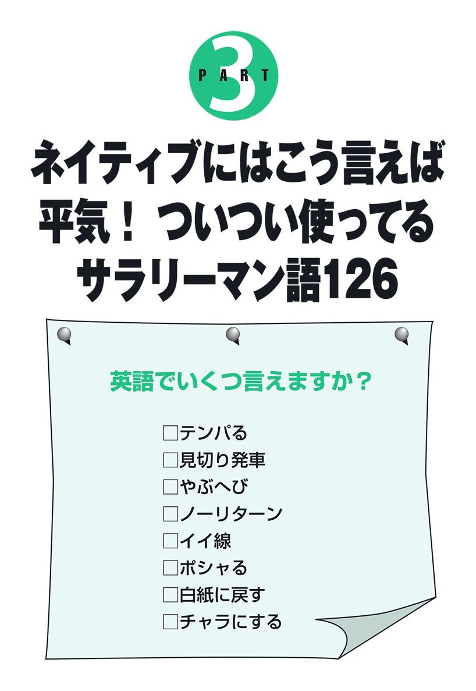

| その英語、ネイティブにはこう聞こえます ４ | |
| David A. Thayne 小池信孝 | |
| (2005) | |
なんで怒ってるの?!
たった1つ単語を
間違えただけで命取り。
ビジネスだからこそ気をつけたい
微妙なニュアンス
今日は大事な大事な取引先でのプレゼン。会社の命運をかけたプロジェクトが決まるも決まらないも、この瞬間にかかっていると言っても過言ではありません。
「なんとかならないかね」と取引先は渋い顔をしています。そこであなたが口にしたひと言。
「なんとかしてみます」
I'll manage.
カッコよく決めたはずなのに、あれ？ 相手は不機嫌そうな顔をしています。なぜ？
さらにプレゼンは続きます。
「この件、詳しく説明してもらえる？」と取引先。
さきほどの名誉挽回とばかりにあなたが口にしたひと言。
「興味がおありですか？」
Are you interested in that?
するとどうでしょう。相手はカンカンに怒って帰ってしまったではありませんか。当然、プレゼンは大失敗です。
I'll manage.
Are you interested in that?
実はこの2つの言い回し、どちらもネガティブなニュアンスを含んだ言い回しなのです。日本語訳するとI'll manage.は「イヤだけど、なんとかしてやるよ」。Are you interested in that?は「あんなものに興味があるの?!」。だから相手は怒ってしまったというわけ。正しい言い回しは本書の中に。
大好評『その英語、ネイティブにはこう聞こえます』シリーズの第4弾は、あなたがビジネスの席でこんな失敗をすることがないよう、日本人が間違いがちなビジネス英会話を集めました。
そもそも、ビジネスシーンというのは最も言葉のニュアンスに気を使わなければならない機会ではないでしょうか。
「ちょっと待ってて」も、ビジネスの相手に対してなら、「少々お待ちください」と使い分けるはずです。
この微妙なニュアンスの違いを、日本人はなかなか英語にして使い分けることができません。なぜなら、学校教育も、多くの英会話本も、""
しかし、この微妙なニュアンスの違いこそが、ビジネスシーンでは最も重要なのは言うまでもありません。
この本は手に取った人すべてがビジネスで成功できるよう、ビジネスで使いがちな失敗英語に加えて、「ビジネスならではのニュアンスはこう言う」の例をたくさん紹介しています。
1章では、ちょっとしたニュアンスの違い、全然違う意味になってしまう言い回しなど、日本人が使いがちな間違ったビジネス英語を集めました。
また、2章では日本と欧米でのビジネスマナーの違いを、3章では「ポシャる」「やぶへび」など、よく使うビジネス用語を英語ではどう言うかをまとめました。
なお、ここで紹介した英語はアメリカ英語です。英語の構造や表現、また文法などの説明が既刊本と重なるところがありますが、これはビジネス英語でも日本人が陥りやすい英語の急所なので改めて注意を促した次第です。
この1冊を読み終えたとき、きっとあなたは""
その英語、ネイティブには
ヘンに聞こえています
●よく使うひと言（社外）
●よく使うひと言（社内）
●初対面のあいさつ
●電話（かけるとき）
●電話（かかってきたとき）
●アポイント
●相手先を訪問
●訪問してきた客への対応
●社内トーク（部下へ）
●社内トーク（上司へ）
●会議（社外）
●会議（社内）
●注文
●クレーム
●メール
●接待（食事）
●接待（ゴルフ）
間違えると大変！
これがネイティブ流の
ビジネスマナー
●こんなシーン、ネイティブはこう言います。「おはようございます／おつかれさまでした」
●こんなシーン、ネイティブはこう言います。「いってらっしゃい／おかえりなさい」
●ネイティブはかわさない?! 飲みニケーション。
●ネイティブならあたりまえ、パーティの常識。
●その英語、ネイティブの気分を害します。
●気をつけたい！ 会社訪問の常識、非常識。
ネイティブにはこう言えば
平気！ ついつい使ってる
サラリーマン語
●装丁 犬塚勝一
●カバーイラスト 深川直美
●本文イラスト バーヴ岩下
●校正 東京出版サービスセンター
●編集・制作 主婦の友インフォス情報社
※本書の内容についてのお問い合わせは、主婦の友インフォス情報社企画出版部（電話03-3295-9465、担当＝長岡）までお願いいたします。アップトゥデートな情報に対応するため、インターネットのホームページにお知らせなどを掲載する場合があります。http://www.st-infos.co.jp/
【よく使うひと言（社外）】
（恐縮して）
いえいえ、とんでもないです。
×No, that's not true.

もう1回ほめてよ。
このように否定してしまうと、相手はまた「いえいえ、本当にすばらしいですよ」などと言わなければならず、また同じことの繰り返しになってしまう。したがって、欧米諸国では、おほめの言葉は素直に受け入れて感謝するのが普通。
Thank you for the compliment.
「おほめいただきありがとうございます」。ほめられたときには素直に喜ぶ。これぞネイティブ流。
【よく使うひと言（社外）】
ありがとうございます。
×Thank you very much.
ど～もありがと！
これだけだと、ビジネスシーンで使うには不十分。
Thank you for ～.
具体的に何について感謝しているのかを伝えること。例えば、Thank you for all your help.（お力添えありがとうございました）、Thank you for your time.（お時間をありがとうございました）といった具合。
【よく使うひと言（社外）】
お礼の言葉もございません。
×I don't know how can I thank you.
私は知らない。どうお礼をするの？
これでは、I don't know.と How can I thank you?の2つのセンテンスを続けて言っているようにしか聞こえない。
I don't know how I can ever thank you.
how I canの順序にする。「なんとお礼を申し上げたらいいか」「お礼の言葉もございません」といったニュアンスに。
【よく使うひと言（社外）】
喜んで～させてもらいます。
×I'm willing to do that.
条件によってはやってもいいですけど。
be willing to～.を「喜んで～する」と覚えた人が多いはず。でもこれ、実際には「（条件によっては）喜んで～する」という含みを持たせて使う言い回し。あまり感じのよい言葉使いとは言えない。
I'd be happy to do it.
I'd be happy toという言い回しを使えば、余計な含みはなくなる。とても気持ちよく引き受ける感じがして◎。さらに、thatをitにすると好印象。
【よく使うひと言（社外）】
最近いかがですか。
×How are you recently?
今は元気ですか、最近？
How are you～?は現在のことを尋ねる言い回し。しかし、recentlyは過去のことを話すときに使う単語なので、この2つをつなげてしまうと、相手はいつのことが聞きたいのか迷ってしまう。
How have you been?
ビジネスでも、このあいさつ表現で問題なし。
【よく使うひと言（社外）】
ご理解いただきありがとうございます。
×Thank you for your patient.
患者をありがとう。
patientは「患者」。patientとpatienceを混同してしまっている人が意外と多い。
Thank you for your patience.
「忍耐」「辛抱」はpatience。これで「ご理解を感謝します」のニュアンスになる。
【よく使うひと言（社外）】
ご迷惑でなければいいのですが。
×I wish it's not too much trouble.
迷惑にならなきゃいいけどね......。
I wish～は、実現が不可能なことがらについて使うのが普通。例えば、I wish I could fly.（空を飛べたらなぁ）、I wish I had gone to the party.（パーティに行っておけばよかったな）といった具合。これでは迷惑をかける気まんまんに聞こえて、相手に失礼。
I hope it's not too much trouble.
十分に実現が可能なことがらについてはhopeを使う。例えば、I hope you can come to the party.（パーティに来てくれたらうれしいです）。
【よく使うひと言（社外）】
ご期待には添えません。
×I'm sorry to disappoint you.
がっかりさせて悪かったわね。
ビジネスに適した言い方とは言えない。これでは皮肉にとられてしまうかも。
I'm sorry I couldn't do more to help.
こちらのほうがよりポジティブでおすすめ。
【よく使うひと言（社外）】
ちょっとお答えしかねますが。
×I don't know.
知るか。
「知るか」「さあね」と突き放しているみたい。ビジネスの場にはそぐわない。
I'm not sure.
「さあ、どうでしょうか」「ちょっとお答えしかねますが」といったニュアンス。はっきりとものを言うのはいいことだが、時と場合によっては、これくらいあいまいな言い方が望ましい。日本語でも、上司やお客さま相手のときにはこんな言い方をするはず。
【よく使うひと言（社外）】
興味深いですね。
×I'm very interesting.
私はおもしろい人です。
形容詞のinterestingの使い方が間違い。これでは「自分がおもしろい」という意味になってしまう。
I'm very interested.
この場合は受動態で伝える。これで「とても興味を持ちました」「とても興味深いですね」という意味になる。
【よく使うひと言（社外）】
興味ございません。
×I am not interested.
まるで興味なし！
I amと短縮せずに話すと、興味がないということを強調して話しているような口ぶりになる。
I'm not interested.
会話ではI'mと短縮して話すのが普通。こうするだけで、ガラリと印象が変わる。これで強調しているようには聞こえない。
I'm sorry, but this isn't for me.
This isn't for me.でも「興味ありません」という意味になる。
【よく使うひと言（社外）】
随時連絡を入れてください。
×Please inform on me.
私のことをチクってください。
inform on～は「～のことをチクる」「～のことを告げ口する」という意味。例えば、I'm in jail because my best friend informed on me.（親友にチクられて、刑務所入りさ）と使う。
Please keep me informed.
keep someone informedという言い回しを覚えておこう。
【よく使うひと言（社外）】
明日、ご連絡いたします。
×I'll contact with you tomorrow.
明日、あなたと体の接触をします。
確かにcontact withは「連絡をとる」という意味で、I made contact with him.（彼と連絡がとれた）などと使うが、ネイティブがI'll contact with～.という言い回しをすることはない。これでは肉体的なcontact（接触）のことを言っているように聞こえる。
I'll contact you tomorrow.
withをとればOK。
【よく使うひと言（社外）】
なんと説明したらいいか。
×It's hard to tell you this.
聞かぬが花ですよ。
「聞きたくない話だと思いますよ」という意味。これは本人を目の前にして、何か言いづらいことがあるときの言い方。
It's hard to explain.
explain（説明する）という単語を使うとすっきりと伝えられる。hard to～は「～するのが難しい」という意味。
【よく使うひと言（社外）】
おっしゃることはよく分かります。
×I understand what you say.
あなたの言葉はいつもよく分かる。
これだと言葉の理解度の問題になってしまう。
I understand what you're saying.
what you're sayingと進行形にすれば、「分かりますよ」と理解を示すときの言い方になる。
I see.
実は、これでもニュアンスはほとんど変わらない。
【よく使うひと言（社外）】
本日の営業は終了いたしました。
×We're closed.
もう終わったよ！
ビジネスで使うにはいまひとつ。ネイティブなら、これにもうひと言加えるはず。
I'm afraid we're closed.
文頭にI'm afraidを付ける。申し訳なさそうに話す感じが出せて◎。I'm sorry, but we're closed.もおすすめ。
【よく使うひと言（社外）】
のちほどお返事いたします。
×I'll answer that later.
返事は後でするからさ！
日常会話ならOKだが、ビジネスで使うには少々ぶっきらぼうに聞こえてしまうのでバツ。
Would you mind if I answered that later?
文にifを使うと、センテンス全体がやわらかい響きを持つようになる。Is it okay if I answer that later?と言っても同じニュアンスに。Could I answer that later?でもOK。
【よく使うひと言（社外）】
一番忙しい時期ですので。
×It's the most high season.
今はもっとも神聖な季節なのです。
日本語の「ハイシーズン」は立派なカタカナ語。most highは宗教的な意味合いで使われることが多い語で、「聖なる」「もっとも神聖な」といった意味。
It's the busiest season of the year.
そのまま直訳してthe busiest seasonとすればOK。
【よく使うひと言（社外）】
会社がピンチでして。
×My company is very dangerous.
うちの会社は乱暴者が多くてね。
dangerousでは、経営状況がどうこうではなく、「怖くてキケン」ということになってしまう。いったいどういう会社なのか......。
My company is in trouble.
be in trouble（トラブル状態で、ピンチで）という言い回しがもっとも自然。
My company is in the red.
単純に「赤字だ」と言うならこれ。
【よく使うひと言（社外）】
来月、事務所を移転します。
×We will move our office next month.
来月、事務所を運んで移動します。
move our officeと言ってしまうと、「事務所をそっくりそのまま運んで移動する」というとんでもない意味になってしまう。
We'll move to a new office next month.
move to～で「～に移転する」の意に。
【よく使うひと言（社外）】
当社の株が8月に上がりました。
×Our stock rose up in August.
8月に株が立ち上がってケンカした！
rise upは「奮起して立ち上がる」という意味で、rise up in arms（武器を持って立ち上がる）などと使うのが普通。「株などが上がる」という意味では使わないので注意して。
Our stock value rose in August.
upをとればOK。roseは、increasedやclimbedで言いかえても可。
【よく使うひと言（社外）】
会社員です。
×I'm an office worker.
某社で働く、ただのサラリーマンです。
日本では「会社員です」という答え方をよくするが、英語では、このようなあいまいな答え方をすることはまずない。
I'm an accountant at a consulting company.
「コンサルティング会社で経理をしています」。このように具体的に職種を伝えるのがネイティブ流。
【よく使うひと言（社外）】
すぐに済みますから。
×It takes a little time.
これはちょっと時間がかかりますよ。
take a little timeは「ちょっと時間がかかる」の意。相手に対してネガティブに聞こえる。
It takes little time.
aをなくしてtake little timeとする。これで「ほとんど時間がかからない」の意に。
It takes almost no time.
「ほとんど時間はかかりません」。こう伝えてもOK。
【よく使うひと言（社内）】
ちょっと出かけてきます。
×I'm leaving.
帰るからな。
職場で使うにはつっけんどん。大人げないのでバツ。
I'll be back.
英語には日本語の「行ってきます」のような決まった言い方は存在しないため、状況に応じて、その場に一番合った言い方をするのが普通。また戻ってくるつもりならこう言うのがごく自然。
【よく使うひと言（社内）】
お昼に行ってきます。
×I'm going to eat lunch.
昼を黙々と食べてきます。
本来ならgo to lunchやhave lunchと言うところをあえてeat lunchなどと言うと、eatの部分ばかりが強調されて聞こえてしまい、ネイティブの耳にはとても不自然に聞こえる。
I'm going to lunch.
go to lunchだけでも「昼を食べに行く」という意味になる。もしくは、I'm going to have lunch.と言ってもOK。
【よく使うひと言（社内）】
メモリーカードを借りてもいいですか。
×Do you have a memory card?
メモリーカードある？
ややカジュアルすぎる。部下や同僚が相手ならこれでもOK。
Could I borrow a memory card from you?
Could I borrow～?（～をお借りできますか？）という言い回しを使えば、丁寧に尋ねることができる。
Do you have a memory card I could borrow?
後にI could borrowと付ければ、一転して丁寧な言い方に。
【よく使うひと言（社内）】
それは確かですか。
×Are you sure?
それ、違うんじゃないの？
言い方にもよるが、特にsureを強めに言ってしまうと相手のことをまるで信頼していないかのような口ぶりになってしまう。
Are you certain?
ビジネスで使うなら、「確信している」という意味のcertainを使った言い回しが自然。こう尋ねれば余計な含みはなくなる。
【よく使うひと言（社内）】
それは本当なのですか。
×Really?
うっそ～。
幼稚に聞こえるのでバツ。いい年をした大人は、普通こうは言わない表現。
Is that right?
知的に聞こえる確認表現がこれ。ビジネスシーンでは、こういったとっさのひと言もできるだけ気を使いたい。
【よく使うひと言（社内）】
今日は社外で研修です。
×I have out-house training today.
今日は便所訓練がある。
in-house trainingが「社内の勉強会」だからといって、そのままout-houseとしてしまわないように。なんと、out-houseは「便所」のこと。「便所訓練」ってペットじゃないんだから。
I have off-site training today.
「社外研修」はoff-site trainingと言う。
【よく使うひと言（社内）】
今日は会社を休みます。
×I am having an off day.
今日は最悪の日だ。
これはI am having a bad day.と同じ意味の表現。
I'm going to take today off.
これで「今日は会社を休みます」の意に。また、I'm going to take a day off today.やI take today off. などと言っても同じ意味。
I'm skipping work today.
こちらはさぼったときの言い方。
【よく使うひと言（社内）】
どうしてでしょう？
×Why?
なんで？
普段の会話ならなんの問題もないが、職場で使うにはそぐわない。
Could you tell me the reason?
職場や取引先で使うなら、これくらい丁寧な聞き方をすべき。
I'm not clear on the reason.
「理由がよくわからないのですが」。こちらもビジネスライクでおすすめ。
【よく使うひと言（社内）】
すみませんでした。
×Sorry.
悪い。
ビジネスの場ではできるだけ完全文（主語、動詞を含む文）を使うこと。より誠実。
I'm really sorry.
完全文はこれ。Thanks.も同じことで、ビジネスではThank you ever so much for your help.などがベター。
I feel terrible about what happened.
これも謝罪の言葉としてネイティブがよく使う言い回し。「大変申し訳なく思っております」。
【よく使うひと言（社内）】
6時に出発しなければなりません。
×We are necessary to leave at 6:00.
6時に出発するためには我々の力が必要なのだ。
We are necessary to～.は「～するためには我々（の力）が必要だ」という意味。いったいどんな力を発揮してくれるというのか......。
We need to leave at 6:00.
シンプルにこれでOK。英語としても自然。
【よく使うひと言（社内）】
昨日、パソコンが壊れてしまいまして。
×My computer was broken yesterday.
昨日はパソコンが壊れていたけど、今日はもう大丈夫よ。
これでは、壊れていたのは過去のこと、ということになってしまう。
My computer stopped working yesterday.
今も壊れたままならstopped workingとすれば正しく伝わる。
【よく使うひと言（社内）】
コピー機に紙が足りません。
×We need more papers for the copy machine.
コピー機に新聞が足りません。
paperを複数形にしてpapers とした場合、意味は「新聞」または「論文」の意味になってしまう。
We need more paper for the copy machine.
「紙」は何枚でも単数のままでOK。paperは可算名詞と不可算名詞で意味が変わるのだということを覚えておこう。
【よく使うひと言（社内）】
福利厚生について教えてください。
×Could you tell me about your company's welfare policy?
会社の貧弱者に対する施策をお聞かせください。
「福利厚生」をwelfare policyだと思っている人が意外と多い。普通、welfareといえば「福祉事業」のことで、国レベルで行うものを指す。
Could you tell me about your company's benefits?
会社単位ならbenefitsを使うのが普通。
【初対面のあいさつ】
ABC社の伊藤と申します。
×Hello. This is Ito of ABC.
ABC社の「イトー」だよ。
ファーストネーム（名前）が「イトー」だと思われて、How can I help you, Ito?（イトー、ご用件は？）なんていきなり呼び捨てにされる恐れ大。
Hello. This is Hiroshi, Hiroshi Ito of ABC.
ファーストネームを繰り返す。これで名字が伊藤だということが正確に伝わる。
【初対面のあいさつ】
私は営業部の佐藤と申します。
×I'm Sato. I belong to the sales department.
私、佐藤は営業部の所有物です。
belong to～などと言ってしまうと、それが物か何かのように聞こえてしまう。人については使わないので注意。
I'm Sato. I work in the sales department.
シンプルにこれでOK。I work in～.と伝えるのがごく自然。
【初対面のあいさつ】
妻がおりまして。
×I have one wife.
まだ1人目の女房しかいないよ。
妻は1人に決まっているのだから、いちいちone～などと言う必要なし。あえてこう言うと、そこが強調されて「1人目の妻」のニュアンスになってしまう。もちろん、一夫多妻制の国ならこれでも問題ないのだが......。
I'm married.
こう伝えるのがごく自然。
【初対面のあいさつ】
ロバート・スミスを紹介します。
×This man is Robert Smith.
そうさ、こいつがロバート・スミスだ。
This man is ～.などと言うと「こいつが」「この男が」と言っているように聞こえる。野蛮な感じがするのでバツ。
This is Robert Smith.
this isだけで十分丁寧。
I'd like to introduce you to Robert Smith.
より丁寧に言いたいならこちらで。
【初対面のあいさつ】
あなたにジョンを紹介したいのですが。
×May I introduce John to you?
あなた様にジョンを紹介してもよろしゅうございますか。
紹介する許可をもらおうとしているようで不自然。
I'd like to introduce you to John.
人を紹介するときには、I'd like to introduce you to～.という言い回しをよく使う。ビジネスシーンでも問題なく使える。
【初対面のあいさつ】
こちらが私の上司です。
×This is my boss.
こちら、うちの私の上司様。
ネイティブなら、本人を目の前にしてmy bossなどと言うことはない。あえてこんな言い方をすると、半分バカにしながら紹介しているような口ぶりになってしまう。
This is Robert Smith from work.
いちいち「上司」などとは言わずに名前を言う。
This is my supervisor, Robert Smith.
あえて言うなら、bossではなくsupervisorと言って後ろに名前を。
【初対面のあいさつ】
私どもの社長の高橋です
×This is our president of our company, Mr. Takahashi.
わが社の、私たちのほうの社長、高橋です。
our president of our companyなどと言うと、「私たちのほうの社長」のニュアンスに。つまり、少なくとも2人以上の社長がその会社にはいることになってしまい、相手は混乱してしまう。
This is our president, Hiroshi Takahashi.
シンプルにこれでOK。of our companyなどと言う必要なし。
【初対面のあいさつ】
彼は新入社員です。
×He's a freshman.
彼は1年生です。
学校じゃないんだから。freshmanは「新入生」の意。
He's new here.
こう伝えれば、その人が新人だということがわかる。とてもネイティブっぽい言い回し。
He's a new employee.
employeeは「社員」の意。
【初対面のあいさつ】
同じ会社で働いている友達です。
×He is my co-worker.
同じ会社の人です。
これでは、He is my co-worker, but he's not my friend.（彼は同じ会社で働いているけど、友達じゃない）と言っているようなもの。よそよそしい感じがするのでバツ。
This is my friend from work.
友達なら、こう伝えるのがごく自然。
【初対面のあいさつ】
パソコン業界で働いています。
×I work in the PC-related industry.
パソコン業界ではなく、パソコンと関係のある業界で働いています。
日本語では「IT関連」「金融関係」などというあいまいな伝え方をするが、それをそのまま訳して～relatedなどとしてしまわないように。これだと、ただ関係があるだけになってしまい、意味が違ってくる。
I work in the PC industry.
ずばりPC industryでOK。ちなみに、「IT関連」はIT industry、「金融関係」はfinancial industry。
【初対面のあいさつ】
お名刺を頂戴できますか。
×Can I have your business card?
名刺ちょうだい。
コンパなどで知り合った人に向かって言うなら問題ないが、ビジネスで使うにはそぐわない。
Could I ask for a business card?
Could I ask for～?（～をいただけますか）という言い回しを覚えておこう。ビジネスで大活躍の言い回し。
【初対面のあいさつ】
ABCラジオで働いています。
×I'm working for ABC Radio.
今のところはABCラジオで働いています。
現在進行形で言うと、一時的にそうしているかのような口ぶりに。
I work for ABC Radio.
シンプルにこれでOK。
【初対面のあいさつ】
英語は苦手でして。
×My English isn't any good.
私の英語はどうにもならないほどひどい。
～isn't any good.と言うと、「～はよいところがまったくない」「ひどすぎてどうにもならない」という意味になる。
My English isn't very good.
anyではなくveryを使う。こう伝えれば、とても自然な英語になる。
【初対面のあいさつ】
英語の聴き取りは苦手でして。
×My English hearing is not very good.
英語の聴力がよくない。
hearingなどと言ってしまうと、「聴力」の問題を言っているように聞こえてしまう。たとえば、耳鼻科で行う「聴力検査」はhearing testと言う。
I have difficulty understanding spoken English.
I have difficulty ～ing.（～するのが苦手だ）という言い回しを使えば正しく伝わる。
【初対面のあいさつ】
10名の男性と、7名の女性従業員がいます。
×We have 10 male and 7 female employees.
仕事をする男性10人と、お茶汲みの女性が7人います。
このような男女を分けた言い方は、男女差別と受け取られかねないので、できるだけ避けるようにしたい。
We have 17 employees.
「17名の社員がいます」。男女を分けずに伝える。これぞネイティブ流の言い回し。
【初対面のあいさつ】
中国に支社があります。
×We have company in China.
中国に客がいます。
ありがちな間違い。have companyと言った場合には、companyは「来客、訪問者」の意に。したがって、これでは「中国に客がいる」という意味不明なひと言になってしまう。
We have a company in China.
aがあるのとないのとでは大違い。「会社がある」と言いたいときには、aを付けてhave a companyとする。
【初対面のあいさつ】
5年前に入社しました。
×I entered the company five years ago.
5年前に会社のビルに入りました。
「（会社に）入る」と言うときにはenterはあまり使わないので間違えないように。これでは「その会社（のビル）に入った」という物理的な話をしているように聞こえる可能性あり。
I joined the company five years ago.
「参加する」「加わる」という意味でよく使われるjoinという単語を使ってjoin the companyとする。この伝え方がもっとも一般的。
I started working here five years ago.
「5年前にこの会社で働き始めました」が直訳。こう伝えるのも手。
【初対面のあいさつ】
ニューヨークに来て2年経ちます。
×I live in New York for two years.
ニューヨークで2年間暮らす習慣があります。
I live in～.と単純な現在形にしてしまうと、習慣を語っているような口ぶりになってしまい不自然。
I've lived in New York for two years.
今も暮らしているのだから、現在完了形でhave livedとする。
【初対面のあいさつ】
飛行機は大変だったでしょう。
×I'm afraid you had a rough flight.
残念ながら、あなたはひどいフライトを経験しました。
I'm afraidの使いどきが間違っている。
It must have been a rough flight.
It must have been～.は、「きっと～だったのでしょうね」と相手を気づかうときによく使う言い回しです。It must have been a long day for you.（大変な一日だったのでしょうね）。
【初対面のあいさつ】
（面接で）
仕事の経験を教えてください。
×Please tell me about your experiences.
これまでに経験したおもしろい話はありますか。
experiencesと複数形にしてしまうと、「これまでに体験した面白い話」のニュアンスに聞こえてしまう。相手は何を話したらいいのか困ってしまう。
Please tell me about your experience.
experienceと単数にする。これで普通に「（仕事の）経験を教えてください」の意に。
番号を間違えました。失礼しました。
×Wrong number. Sorry.
間違えちゃった。ごめん、ごめん。
これではちっとも反省しているように聞こえない。100％自分に非があるのだから、もっと丁寧に心をこめて謝罪しよう。
I'm sorry. I've reached the wrong number. I apologize for disturbing you.
これくらい心を込めた言い方がベター。I've reached the wrong number.は「違う番号に掛けてしまいました」という意味で、このようなときによく使う言い回し。
I'm very sorry. I've dialed the wrong number. Please excuse the call.
Please excuse the call.は「失礼いたしました」のニュアンス。
【電話（かけるとき）】
伝言をお願いできますか。
×Please give him a message.
伝えておくように。
これではお願いではなく、命令になってしまう。
Could you possibly give him a message?
Could you possibly～?（～していただくことはできますでしょうか）
Maybe you could give him a message.
Maybe you could～.は「～していただけるとありがたいです」のニュアンス。覚えておいて損なし。
【電話（かけるとき）】
折り返しご連絡いただきたいと伝えてもらえますでしょうか。
×I want you to tell him to call me back.
折り返し連絡しろって伝えておいて。
I want you to や tell him to～には、上の立場で命令を下すニュアンスが含まれる。普段の会話で使ったり、部下や同僚に対して使うならこれでもいいのだが、お客さまに対して使うと失礼に。
Could you ask him to call me back?
tellをaskにして、ask him to～とするだけで一転してビジネス向けの言い方に。
I'd like to ask you to have him call me back.
I'd like to ask you to～.は「～をお願いできますか」という意味の言い回しなので、覚えておくと便利。
【電話（かけるとき）】
すみません、電話が遠いのですが。
×I'm sorry, I can't hear.
私は耳が不自由なのです。
これでは、「私は耳が聞こえない」の意味になってしまう。I can't hear you.なら「聞こえないのですが」という意味になる。
I'm sorry, I didn't catch that.
このcatchは「聞こえる」「聞き取る」という意味で使われている。ネイティブがよく使う言い回しなので覚えておこう。
Could you say that one more time for me?
このように丁寧に頼む言い方も覚えよう。
【電話（かけるとき）】
何時にお戻りですか。
×What time will he come back?
いったい何時に戻ってくるのよ?!
これでは「いったい何時に戻るのよ?!」と問い詰めているような口ぶりになってしまう。
What time is he expected back?
帰社予定時刻を尋ねるときには、expectという単語を使うと自然な言い回しになる。
【電話（かけるとき）】
ピーター・ジョーンズさんをお願いします。
×Can I speak to Peter Jones?
私の名前は言えないが、ピーター・ジョーンズさんを出してください。
まずは自分から名乗るのが万国共通の常識。名乗れない理由でもあるのか？
Hello, this is John Smith from IBM. May I speak to Peter Jones in Marketing, please?
「IBMのジョン・スミスですが、営業部のピーター・ジョーンズさんをお願いします」。May I～, please?は、普段の会話では丁寧すぎて不自然に聞こえることが多いが、ビジネスシーンでは定番表現として定着しているのでOK。
【電話（かけるとき）】
電話番号を教えてください。
×Can you teach me your phone number?
電話番号を私に伝授する力がありますか。
Can you～?という言い回しだと、お願いするというよりも、「～する能力はあるか」と尋ねるニュアンスになってしまう。また、teachは「指導する、伝授する」のほうの「教える」。I guess～（え、まあ......）などと困った顔をされそう。
Could you tell me your phone number?
この場合、tellを使うとぴったりくる。
【電話（かかってきたとき）】
田中におつなぎします。
×I'll connect to Mr. Tanaka.
私が田中さんとつながります。
お前がつながってどうする？
I'll connect you to Mr. Tanaka.
I'll connect you to～.という言い回しを使うのがごく自然。
【電話（かかってきたとき）】
（電話に出て）
はい、私が伊藤ですが。
×I'm Ito.
あたしが伊藤よ。
「だから何さ？」とでも言いたげな口ぶり。なんだか反抗的に聞こえて不自然。
Speaking.
「はい、私ですが」。シンプルにこれでOK。
This is him／her.
This is he／she.
こちらもよく使う。どちらでもOK。
【電話（かかってきたとき）】
田中はただいま席をはずしております。
×Tanaka is away from his desk right now.
田中の野郎は席にいないよ。
英語の場合、名字を呼び捨てにするとこんな感じの悪い言い方に。
Mr. Tanaka is away from his desk right now.
日本語では、上司や同僚など同じ会社の人について話すときには名前を呼び捨てにするが、英語ではMr.やMs.をつけるのが普通。
He's away from his desk right now.
こちらでもOK。
【電話（かかってきたとき）】
彼は外出しています。
×He's not here.
彼はもうここにはいないよ。
「ここにはいないよ」というニュアンス。これでは、会社を辞めたか、転勤したかと思われてしまう。
I'm sorry. He's out of the office now.
「外出している」と言うならout of the officeという表現がぴったりくる。I'm sorry.と添えればさらに◎。
【電話（かかってきたとき）】
少々お待ちください。
×Wait a minute.
待っててね。
「ちょっと待って」「待っててね」といったニュアンス。お客さま相手に馴れ馴れしいにもほどがある。
Hold on, please.
よく使うのがこの言い回し。Just a moment, please.と言ってもOK。
【電話（かかってきたとき）】
折り返し電話させましょうか。
×Should I make him call you later?
どんなに嫌がっても、折り返し電話させたほうがいいですか？
このmakeは「無理やりさせる」のニュアンス。
Should I have him call you later?
makeではなくhaveを使えば余計な含みはなくなる。このhaveは「～をさせる」という意味。Should I have him call you back?と言っても同じ。
Would you like him to call you back?
Would you like～?を使ってこう言うこともできる。こちらも丁寧でおすすめ。
【電話（かかってきたとき）】
ご伝言はおありですか。
×Do you want to leave a message?
伝言を残したいの？
ビジネスシーンでは、Do you want to～?というストレートすぎる言い回しはそぐわない。
Would you like to leave a message?
Would you like to～?という言い回しを使う。
【電話（かかってきたとき）】
よろしければご伝言を承りますが。
×I can take a message, if you want.
そうしたければ伝言を聞くけど。
友達同士ならまだしも、ビジネスシーンでは完全にバツ。
I can take a message, if you'd like.
この場合は、～, if you'd like.という言い回しがベスト。「よろしければ～」というニュアンスで、ビジネスシーンで使うにはぴったり。
【電話（かかってきたとき）】
（退出した者にかかってきて）
彼はもう失礼させていただきましたが。
×He went home already.
もう帰っちゃったよ。まだ早いのにね。
「まだこんな時間なのに」「まだ早いのに」という含みがあるように聞こえる。
I'm afraid he's left for the day. Would you like to leave a message?
ネイティブはleave for the day（今日はもう帰宅する）という言い回しをよく使う。伝言があるかどうかも聞いてあげればさらに◎。
【電話（かかってきたとき）】
山田は今手が離せません
×Yamada is busy right now.
山田のやつは今忙しいんだよ。
日本では同じ会社の人をお客さんの前では名字を呼び捨てにするが、英語の場合も同じだと思ったら大間違い。その人を侮辱しているように聞こえてしまう。
Mr. Yamada is busy right now.
同じ会社の人でもMr.をつけてOK。
Hiroshi is busy right now.
場合によってはファーストネームで。
【アポイント】
企画の件で、近いうちにお会いしたいのですが。
×I'd like to have a meeting about the project in the early days.
大昔に打合せをしたいです。
in the early daysは「初めの間は」という意味の言い回し。これでは意味がまったく違ってきてしまう。
I'd like to have a meeting about the project as soon as possible.
この場合はas soon as possibleを使えば言いたいことが正しく伝わる。
【アポイント】
ご都合つけていただけますでしょうか。
×Could you make your schedule?
お願いすれば、自分の手帳を手作りできる？
make your scheduleなどと言っても「都合をつける」という意味にはならないので注意。伝わらないどころか、「手帳を手作りする」というトンチンカンな意味にとられる恐れあり。
Will that fit into your schedule?
fit intoは「折り合う」という意味。この言い回しを使うと「都合がつく」というニュアンスがばっちり出せる。
【アポイント】
今日はお時間おありですか。
×Do you have time today?
今日、時間ある？
軽すぎ。友達ならまだしも、上司やお客さんに向かって使う言葉使いではない。
Do you happen to have some time today?
happen toを付けて、Do you happen to have～?とすると「もしかして～なんてあったりしませんか」という、とても控えめで、相手の都合を優先した尋ね方になる。Do you have time for a short meeting today?という言い方も好印象。
【アポイント】
何時だとご都合がよろしいですか。
×What time are you convenient?
何時何分ならいいの?!
What time?は、正確な時刻を尋ねるときに使う言い回し。都合を聞くときには使わない。本来はWhat time does the train leave?（電車は何時発ですか）などと使う。
When would be convenient for you?
都合を尋ねるときにネイティブがよく使う表現がこれ。
【アポイント】
ご足労いただけますでしょうか。
×Can you come to my office?
こっちに来れる？
お願いしているというよりは、可能かどうかをストレートに尋ねている感じ。そもそもお客さまに向かってCan you～?などとは言わない。
Do you think you could come to my office?
相手の都合を優先に考えている感じがして◎。
Could I ask you to come to my office?
Could I ask you to～?は「～してもらうようにお願いできますか」という意味。
If it's not too much trouble, could you come to my office?
「ご面倒でなければ、弊社まで来ていただけますでしょうか」
【アポイント】
金曜日だと都合がいいです。
×I want to meet you on Friday.
金曜日じゃないとヤダ！
これでは「金曜日に来い」「金曜日じゃないとだめ」といった、身勝手で自分本位なひと言に。ビジネスの世界では失礼にあたる。相手が同僚や部下なら問題ないだろう。
Friday would be best for me.
はっきり希望を述べるなら、この言い方で。
Do you think you might have time on Friday?
「金曜日にお時間ありますでしょうか」。とても腰の低い感じがして◎。
【アポイント】
明日でしたら空いていますが。
×I have free time tomorrow.
明日なら、空いている時間がたくさんあったり少しあったりします。
曖昧すぎる。これでは空いている時間がたくさんあるのか、少ししかないのか判断できない。
I'm free tomorrow.
こう伝えれば、明日1日空いていることがわかる。
【アポイント】
急用が入ったので、予定を変更していただけませんか。
×I've scheduled an emergency. Could you change the schedule?
急用を予定しています。予定を変更していただけませんか。
scheduleという単語の使い方に注意。動詞には確かに「～を予定に入れる」という意味があるが、「急用」は予定に入れるものではないので、おかしなニュアンスに。
An emergency came up. Could you change the schedule?
An emergency came up.はネイティブがよく使う決まり文句なので、このまま覚えよう。「急用が入りました」の意。
【相手先を訪問】
高橋さんと約束しているのですが。
×I have a promise with Mr. Takahashi.
高橋さんとは例の約束をしているの。
なにやら秘密めいた感じがして怪しい。promiseは「誓い」のニュアンス。
I have an appointment with Mr. Takahashi.
promiseではなくappointmentを使う。どちらにも「約束」という意味があるが、使いどきはまったく別なので注意。
【相手先を訪問】
すぐに伺います。
×I'll go just now.
今だけなら行くよ。
just nowと言っても「すぐに」という意味にはならない。justは意外と勘違いした使われ方をすることが多いので注意。これでは「今だけ」「今しがた」といった意味になってしまう。
I'll leave right away.
直訳すれば「すぐに出ます」、転じて「すぐに行きます」「すぐに伺います」のニュアンスに。
【相手先を訪問】
3時にそちらに到着します。
×I'll go there at three.
3時に出発します。
go thereという言い回しだと、その時間に出発すると言っているのか、それともその時間に到着するのかが相手にはわからない。
I'll be there at three.
I'll get there at three.
どちらも「3時にそちらに到着します」という意味で同じニュアンス。
【相手先を訪問】
遅れてしまって申し訳ありません。
×We will apologize for the delay.
遅れたことについては、そのうちに謝るよ。
willが問題。これでは、We will apologize for the delay SOMEDAY.と言っているのと同じこと。
I'd like to apologize for the delay.
I'd like to apologize for～.（～について謝罪いたします）という言い回しを使う。ビジネスシーンで使うのに適した言い方。
【相手先を訪問】
（手土産を渡して）
つまらないものですが。
×Here's a worthless gift.
ろくでもない土産をどうぞ。
なんでも英語に直訳してしまうのは非常にキケン。worthless giftなどと言うと「ろくでもない土産」「くだらない贈り物」という意味になってしまう。Well then, I don't want it.（そんなものいらないわよ！）と突っ返される恐れ大。
Here's a little gift for you.
little giftとすれば、「ちょっとした土産」というニュアンスが出せる。日本語の「つまらないものですが」を英語にするならこれ。
【相手先を訪問】
どうぞおかまいなく。
×Don't take care of me.
病人扱いしないで！
take care of～（人）という言い回しは、病気などで他人の助けが必要な場合に使うのが普通。「介助する」「面倒をみる」というニュアンス。例えば、I have to take care of my sick mother.（病気の母の面倒をみなければならないの）という感じ。
Don't worry about me.
こう答えるのがごく自然。またDon't let me bother you.なら「お気遣いなさらずに」のニュアンス。
【相手先を訪問】
（遠回しに断わるとき）
考えてみます。
×I'll think about it.
わかりました、前向きに検討しましょう！
こう言ってしまうと、断わるどころか前向きに検討することになってしまう。これではOKと言っているのと同じこと。
I'm afraid I'll have to say no.
こう伝えれば、申し訳なさそうに断りを入れる感じになる。
【相手先を訪問】
時間ができ次第、この契約書をお送りします。
×I'll send this contract to you if I have time.
気が向いたら契約書を送ってやるよ。
if I have timeという言い方からは、まったく前向きなニュアンスが伝わってこない。これでは「気が向いたらする」と言われているのと同じこと。
I'll send this contract to you when I have time.
when I have timeとすれば、「時間があるときに」と普通に伝える言い回しになる。
【相手先を訪問】
工場を売却するため、上司と中国に行きます。
×I'm going to China to sell our factory along with my boss.
中国で工場と一緒に上司も売り飛ばす！
along with～は「～に加えて」の意。これでは上司も中国に売り飛ばすことになってしまう。
I'm going to China along with my boss to sell our factory.
go to～（場所）along with～（人）to～（～するために～と一緒に～へ行く）が正しい語順。
【相手先を訪問】
では、そろそろ。
×I have to leave.
もうここにはいたくないよ。
「早くここを去りたい」といったニュアンス。
I'm afraid I have to be going.
I have to be going.で「もう行かなければ」といった意味に。また、I'm afraidを文頭につけると、残念そうな感じが出せる。
【相手先を訪問】
お時間をありがとうございました。
×Thanks to seeing me.
私に会ったお陰よ。
thanks to～は「～のお陰」という意味。例えば、Thanks to you, I was able to graduate.（お陰さまで卒業できました）などと使う。したがって、これでは「私に会えたお陰ですよ」という意味に。
I appreciate your time.
こう言えば、感謝の気持ちがしっかり伝わる。
Thank you for taking the time to meet with me.
「お時間を割いていただきありがとうございました」。丁寧で◎。
【訪問してきた客への対応】
ABC社の方ですか。
×Are you a staff at ABC?
あなたはABC社のこん棒ですか。
staffは可算名詞（つえ、こん棒）と不可算名詞（スタッフ）がある。aがつくのは可算名詞なので、これだと「ABC社のこん棒」の意になってしまう。ちなみに、Are you the staff at ABC?だと「あなたはABC社の唯一の社員ですか」になるのでこちらもバツ。
Do you work for ABC?
こう尋ねるのがもっとも自然。
【訪問してきた客への対応】
お待ちしておりました。
×We were waiting for you.
ちょっと前までは待ってたんだけどなあ。
過去進行形で話すと、終わったことについて話しているように聞こえてしまう。つまり、待っていたけど、そのときにはもう待っていなかったということ。
We've been waiting for you.
現在完了進行形で伝えれば、「（今まで）お待ちしてました」と感じよく伝える言い方になる。「よくいらっしゃいました」なら、Thank you for coming.
【訪問してきた客への対応】
ようこそおいでくださいました。
×I'm glad that you came today.
来てくれてほっとしたよ。
I'm glad that～.は「～でほっとしている」というニュアンスで使うのが普通。客人を迎え入れるときの言葉としてはそぐわない。
It's good to see you.
もっともよく使うのがこの表現。
【訪問してきた客への対応】
（お客さんを案内して）
どうぞこちらへ。
×Follow me.
ついてきなさい。
なんだか教師が生徒に向かって指示しているみたい。Come this way.も同じニュアンスで偉そう。
Let me show you to the meeting room.
お客さま相手なら、Let me show you to～.（～までご案内しましょう）という言い回しがベスト。
【訪問してきた客への対応】
お楽にしてください。
×Please relax.
落ち着いて！
このフレーズは使いどきが別。緊張したり、興奮している人を落ち着かせたいときに使うのが普通。
Please make yourself comfortable.
make oneself comfortableで「楽にする」「くつろぐ」といった意味の言い回しに。ネイティブがよく使う。
【訪問してきた客への対応】
弊社の場所は覚えておられますか。
×Do you remember my office?
私の会社が懐かしいでしょう。
現在形でDo you remember～?と言うと、「～を覚えていますか。懐かしいねぇ」と懐かしそうに言うひと言になる。ちなみに、過去形でDid you remember～?とすると「～を持ってきましたか」の意に。
Do you remember how to get to my office?
「場所を覚えているか」と聞きたいなら、Do you remember how to get to～?とする。
【訪問してきた客への対応】
弊社はすぐに見つかりましたか。
×Did you have difficulties finding my office?
私のオフィスを見つけるのに辛いことがありましたか。
difficultiesと複数形にしてしまうとこんなおかしなニュアンスに。
Did you have trouble finding my office?
troubleを使ってシンプルに尋ねる。Did you have trouble～（ing）?で「～は大変でしたか」の意。
Did you have difficulty getting here?
difficultyと単数形ならば問題なし。
【訪問してきた客への対応】
彼がオフィスにいるか確認してみます。
×I'll make sure he is in his office.
彼が必ずオフィスにいるようにします。
I'll make sureという言い回しは使いどきがまったく別。例えば、 I'll make sure the job is done by Friday.（必ず金曜日までにその仕事が終わるようにします）などと使う。
I'll see if he's in his office.
seeには「確認する」という意味がある。これを使えば、とても自然な言い回しになる。Let me see if he's here.もネイティブがよく使う言い回し。
【訪問してきた客への対応】
（「～さんによろしくお伝えください」と言われて）
わかりました。
×I will.
はいはい。
これだけでは不十分。言い方によっては、かなりぶっきらぼうに聞こえてしまう恐れがあるので注意して。
I certainly will.
certainlyを加える。この一語で大違い。「かしこまりました。必ず伝えます」のニュアンス。Certainly.と言うだけでもOK。
【訪問してきた客への対応】
それはお引き受けできかねます。
×It's difficult.
難しいですがやってみます。
difficultという単語しか思いつかないようだとちょっとまずい。これをそのままIt's difficult.と言ってしまうと、「難しいけどやってみる」というニュアンスになってしまい、断わることにはならない。
I'll have to say no.
ビジネスの場で断りを入れるときによく使うのがこの言い回し。have toを使っているので、「そうせざるをえない」というニュアンスが出せる。
【訪問してきた客への対応】
前向きに検討します。
×I'll consider it positively.
絶対に検討する！
positivelyは「絶対に」「間違いなく」の意。例えば、I'm positively sure.（絶対に確かだよ）、I'm going to quit. Positively!（もう辞めてやる。絶対だ）などと使う。「積極的に」という意味はない。
I'll have a good look at it.
日本語の「前向きに検討します」にもっとも近いニュアンスの表現がこれ。どちらかというとポジティブな時に使う。
【社内トーク（部下へ）】
ちょっとメモっといて。
×Can you write a memo?
いくら君でもメモぐらいはとれるでしょ？
この場合、Can you～?という聞き方をしてしまうと、こんなニュアンスになってしまうので注意。相手は侮辱されたと感じてムッとしてしまうかも。
Could you take a memo?
Could you～?を使う。「メモをとる」はtake a memo。ほかにwrite that down「書き留める」、jot down「手早くメモする」という言い回しもある。
【社内トーク（部下へ）】
急ぎでやってくれ。
×Hurry up!
急げったら！
この言い方では、「急いでよ！」「急げったら！」などとテンパってしまっているように聞こえて大人げない。
Actually, I'm kind of in a hurry.
「実は、ちょっと急ぎなんだが」というニュアンスの当たり障りのない言い方。日本語でもこんな言い方をするはず。
【社内トーク（部下へ）】
（仕事を頼んで）
急がなくてもいいよ。
×Do it slowly.
ゆっくり慎重に作業してくれよ。
これでは「慎重にやれ」という余計なプレッシャーを与えていることになる。
Take your time.
よく使うのがこのフレーズ。
Just do it when you have some time.
「時間のあるときにやっておいて」のニュアンス。
【社内トーク（部下へ）】
これを宅配便で送って。
×Send this by express delivery.
これを宅配便で送っておけよ。
いくら上司でも人としての礼儀はわきまえたい。こんな横柄な上司は部下に嫌われる。
Send this by express delivery, would you?
後ろにwould youをつけるだけで、一転して感じの良い頼み方になるのでお試しあれ。
【社内トーク（部下へ）】
これを投函してきてくれるかな。
×Could you put this into the mailbox?
これをポストにブチ込んできてくれる？
うっかり前置詞をintoにしてしまうと、おかしなニュアンスになってしまうので注意。put intoは同じ「入れる」でも無理矢理に「ブチ込む」「突っ込む」のニュアンス。
Could you put this in the mailbox?
この場合、前置詞はinが正解。
【社内トーク（部下へ）】
ファックスしておいてくれる。
×Fax this, please.
これをファックスしろ！
pleaseをつけたからといって丁寧になるとは限らない。かえって偉そうに聞こえてしまうことがある。部下に嫌われたくないなら、これは避けるべし。
Could I ask you to fax this?
Could I ask you to～?という言い回しがおすすめ。「～を頼んでもいいかな？」というフレンドリーで柔らかいニュアンス。
【社内トーク（部下へ）】
切符を手配してくれないか。
×Could you buy my tickets?
私が持っている切符を買ってくれないか。
「私の（持っている）切符を買ってください」のニュアンス。切符の転売でもするつもりなのか......。
Could you buy me some tickets?
buy my ticketsではなくbuy me some ticketsとすればOK。ticketsと複数にするのを忘れずに。buyをgetにしても。
【社内トーク（部下へ）】
仕事が速いね。
×You do your job fast.
もっとテキパキ仕事をしろ！
ネイティブには You, do your job fast.（おまえ、仕事が遅いぞ）と言われているように聞こえてしまう。
You do fast work.
do fast workで「仕事をすばやくこなす」の意。
You're a fast worker.
こう伝えることもできる。fast workerで「仕事が速い人」の意。
【社内トーク（部下へ）】
いつ終わるのかな？
×When are you going to finish?
いつ終わらせるつもりなのかね。
going toは意図してそうするときに使う言い回し。
When will you finish?
When will you～?というシンプルな聞き方でOK。
When will you be able to finish?
こちらは「いつ終えられますか」のニュアンス。
【社内トーク（部下へ）】
君ならできるさ。
×You can do.
そんな君でも、まあなんとかなるでしょ。
まるで信頼していない感じがするのでバツ。～can doは、「～でなんとかなる」「なんとか大丈夫」というニュアンスで使う言い回し。たとえば、I need a pen, but this pencil can do.（ペンが要るんだけど、でもこれでいや）という具合に使う。
You can do it!
itをつければOK。
【社内トーク（部下へ）】
（部下をほめて）
君の仕事ぶりには満足しているよ。
×Your work is satisfactory.
君の仕事はいまひとつだね。
satisfactoryと言われたら、ほめられているわけではないので勘違いしないように。これは、満足は満足でも「なんとか我慢できる程度の満足」のニュアンス。つまり、まったくほめていない。
I'm fully satisfied with your work.
その人の仕事ぶりに、本当に満足しているなら、fully satisfied withという言い回しを使うとぴったりくる。
【社内トーク（部下へ）】
ちょっと私のオフィスに来てくれるかな。
×I'll see you in my office.
おいっ！ ちょっとオフィスまで来い！
叱るために呼び出そうとしているかのような口ぶり。上司からこんな呼び出され方をしたら、部下はDid I do something wrong?（私がなにか......？）とびびってしまうかも。
Could you come to my office?
シンプルにこれでOK。
【社内トーク（部下へ）】
結果を報告してくれ。
×Please report to me.
君は私の部下なんだよ。
report to meと言うと、report to～が「～の監督下にある」という意味になってしまう。Please report to me all changes and additions.（変更や追加があったときにはすべて報告してください）などと、具体的な内容まで言うならOK。
Please report the results to me.
report the results to～（～に結果を報告する）とする。
【社内トーク（部下へ）】
金曜日までに終わらせてほしいのだが。
×Finish by Friday, please.
金曜日までに終わるように。いいな！
pleaseをつけてもまったく丁寧にならない代表例。むしろ、もっと威圧的になってしまうので、こんな偉そうな言い方は避ける。
We need to finish by Friday.
主語をweにするところがミソ。こうすることでとても紳士的に指示を出すことができる。
【社内トーク（部下へ）】
このプロジェクトが成功したらパーティだ！
×Let's have a celebration if this project succeeds.
プロジェクトが成功したらパーティでもしましょ。まあ無理でしょうけど......。
if this project succeedsとif節で伝えてしまうと、初めから無理と決めつけて話しているような嫌みな口ぶりになってしまう。
Let's have a celebration when this project succeeds.
ifではなくwhenを使う。これでネガティブな含みはなくなる。
【社内トーク（部下へ）】
経費削減を心がけるように
×Keep cost reduction in mind.
経費削減のことを忘れないでいてね......。
Keep～ in mind.は「～のことを忘れないで」のニュアンスで、この言い回しは使いどきが別。言いたいことは伝わるが、ネイティブの耳にはとても不自然に響く。たとえば、Please keep me in mind.（私のこと忘れないで）などと使うのが普通。
Please try hard to reduce costs.
Please try hard to～.（がんばって～してください）という表現を使うとぴったりくる。
【社内トーク（部下へ）】
菓子折の1つも持って行くように
×Take some present with you.
豪華な土産を持って行きなさい。
こういった状況でつい使いたくなってしまうのがsomeという単語。普通なら「ある程度の」「ある分量の」という意味だが、状況によっては「すごい（量の、額の）」の意になることもある。some presentも、「すごい（額の、量の）プレゼント」ととられる可能性大。
Take a present or something with you for them.
「土産か何かを持って行きなさい」のニュアンス。
【社内トーク（上司へ）】
ちょっとお話が。
×We need to talk.
問題発生です！
これだと、必要以上に深刻に聞こえてしまうのでバツ。ちょっと話があるだけなら、こうは言わない。
Could you spare me a moment?
このspareは「時間を割く」という意味。「ちょっと時間ありますか」と話しかけるときによく使う言い回し。
Do you have a minute?
こちらもよく使う言い回し。
【社内トーク（上司へ）】
お手伝いしましょうか。
×Do you need help?
助けがないとできないの？
こう言われると、ネイティブの耳にはDo you need help in order to finish?（助けがなければ終わらせられないの？）を短くした形に聞こえてしまう。イラついているようにも聞こえて感じが悪い。
Do you need a hand?
気軽に助力を申し出る感じ。Do you need some help?やLet me help.という言い回しもよく使う。
【社内トーク（上司へ）】
（手伝いを申し出て）
何をしたらいいでしょうか。
×What shall I do?
一体どうしたらいいの?!
この場合、shallは使えない。これだと「どうしたらいいの?!」「もう、どうしたらいいのかわからない！」などと、パニックを起こしているように聞こえる。
Is there anything I can do?
「何かできることはありますか」。もしくは、How can I help?と言ってもOK。
【社内トーク（上司へ）】
（上司に）
はい、わかりました。
×Yes, sir.
はい、はい、はい。
上司やお得意さまなど、面識のある人に向かってこう言うと、丁寧どころか逆にイヤミっぽくなってしまうことがあるので注意。お客さまなど、初対面の人に向かって使うなら問題なし。
Certainly.
または、Sure.や Of course.なども同じニュアンスでおすすめ。ただし、日常会話でよく使うYeah.は、ビジネスシーンにはそぐわない。
【社内トーク（上司へ）】
（上司に呼び出されて）
すぐに行きます。
×I'll be there as soon as possible.
今すぐには行けませんよ。
as soon as possibleは「できるだけ早く」の意。つまり、そこに行くまでに、ある程度の時間が必要なときにこう言うのが普通。
I'll be there right away.
すぐに行けるなら、right awayという言い回しを使うとぴったりくる。覚えておこう。
【社内トーク（上司へ）】
今忙しいので。
×I'm busy now.
今忙しいの！
これではあまりにもつっけんどん。これにもうひと言添えるだけで、ぐっと感じの良いひと言になる。
I'm a little busy now.
こう答えれば、トゲトゲしい感じはなくなる。「すみません、今、ちょっと忙しいので」と、さりげなく断わる感じに。
【社内トーク（上司へ）】
仕事をたくさん抱えているんです。
×I have a lot of work to be done.
だれかにやってもらわないといけない仕事が沢山あるんです。
to be doneなどと言うと、I have a lot of work to be done by someone.と言っているように聞こえて意味が正しく伝わらない。
I have a lot of work to do.
シンプルにこう言えばOK。
I'm quite busy today.
忙しいのがその日1日だけのことならこう言う。「今日は本当に忙しくて」。I have a full workload today.と言っても同じ意味に。
【社内トーク（上司へ）】
まだ打つ手は残ってます。
×There's little I can do.
できることはもう何もない。
これは打つ手が1つも残っていないときの言い方。
There's a little I can do.
打つ手が多少なりとも残っているなら、aを付けてa littleとする。
【社内トーク（上司へ）】
なんとかなると思います。
×Okay, I'll try.
どうせだめだろうけど、まあやってみるよ。
tryという単語を前向きな意味だと勘違いして使ってしまっている人が意外と多い。しかし実際には、「どうせできないと思うけど試してみる」という後ろ向きな意味合いで使われることが多い。
I'll see what I can do.
「ちょっとやってみますね」という感じ。クールに決めるならこの言い回しがおすすめ。
I don't think there'll be a problem.
「特に問題はないと思います」のニュアンス。頼もしい感じ。
【社内トーク（上司へ）】
（「よくやった」と言われて）
いえいえ、たいしたことありません。
×It was nothing.
私の実力をもってすればなんてことありません。
まるで謙遜しているようには聞こえない。むしろ嫌みなくらい自信満々で感じが悪い。ただし、お礼に対する返事として使うならOK。
Thank you.
ほめられたら素直に礼を言う。これぞネイティブ流。
【社内トーク（上司へ）】
天気が良かったので売り上げも上がりました。
×Because the weather was nice, sales were strong.
売上が上がった唯一の理由は、天気がよかったことです。
Because～.という言い方をすると、理由がそれ1つに限定されてしまう。「唯一の理由が天気」というのはやはり不自然。
The weather was nice, and so sales were strong.
and soというつなぎの表現を覚えておこう。こう伝えれば、「だから～になった」という自然な話の流れを作ることができる。
【社内トーク（上司へ）】
それは公平ではありません。
×That's not fair.
そんなのずるいよ～。
子どもが駄々をこねているみたい。いい年をした大人はこうは言わない。
That's not equitable.
equitable（公平な、公正な）という単語を覚えておこう。
How can we make it a little more equitable?
はっきり不公平だと言うのがむずかしい状況なら、このように質問で返してみるのも手。「どうすればもう少し公平になるでしょう？」。
【社内トーク（上司へ）】
社長、これを見てください。
×Mr. President, could you look at this?
大統領、これを見てください。
会社の社長をMr.Presidentとは呼ばない。Mr.Presidentと呼ばれているのは「アメリカ合衆国大統領」だけ。
Could you look at this, John?
欧米諸国では、社長も上司もファーストネームで呼ぶのが普通。
【社内トーク（上司へ）】
今日は予定があります。
×I have a schedule today.
今日は予定表を持ってきています。
「予定」と聞いてscheduleという単語しか浮かばないようだと、こんな失敗をしかねない。この場合「予定表」という意味に聞こえる。
I'm afraid my schedule is full today.
この場合、full（いっぱいの）という語を使うと「スケジュールがいっぱい」というニュアンスがばっちり出せる。I'm afraidを文頭につけると、申し訳なさそうに話す感じも出せる。
【社内トーク（上司へ）】
（上司に飲みに行こうと誘われて）
飲めないんです。
×I don't drink.
私は酒なんか飲まないのよ。
言い方にもよるが酒飲みをけなしているかのような口ぶり。
I'm not much of a drinker.
「いやあ、あまり飲めないもので」とサラッとかわす感じ。
I can't handle alcohol.
体質的にアルコールがダメな場合はこう言う。また、「ソフトドリンクをいただきます」と言うなら、I'll just have a soft drink.
【会議（社外）】
みなさんのテーブルに資料をお配りしました。
×I handed the documents out on the table.
テーブルの上に立って資料を配りました。
hand～outは「手渡しする」という意味。これでは「テーブルの上に立って、資料を一人ひとり手渡しした」というニュアンスに。
I put some documents on the table.
put ～on the tableという言い回しを使えば問題解決。
【会議（社外）】
弊社のパンフレットをお配りします。
×I'll hand over our pamphlet.
パンフレットを引き渡します。
hand overは「引き渡す」という意味で、普段のビジネス会話では使わない言葉。例えば、強盗がHand over your money!（金をよこせ！）など。
I'll hand out our pamphlet.
「配る」ならhand out。
【会議（社外）】
資料をご覧ください。
×Please see the material.
マテリアルさんに会いに行ってください。
動詞をseeにしてしまうと、materialが人か何かのように聞こえてしまう。Please see the accountant.（会計士に会いに行ってください）などと使うのが普通。
Please look at the material.
この場合、動詞はlook atを使う。
Please have a look at the handouts.
have a lookを使えば、「さっと見てください」のニュアンスに。
【会議（社外）】
まずはビデオをご覧ください。
×At first let's watch the video.
はじめのうちはビデオをご覧ください。
at firstは「初めのうちは」「当初は」といった意味で、使いどきが別。例えば、At first I thought he was lying.（初めのうちは、彼がウソついているのかと思ったわ）などと使う。
First, let's watch the video.
「まずは～してください」と伝えるなら、atは不要。First,～という言い回しが正解。
【会議（社外）】
次のコメントを参考にしてください。
×Please refer the following comment.
次の発言を紹介してください。
refer someone to someoneで「～（人）を～（人）に紹介してください」という意味の言い回しになる。例えば、Please refer Mr. Jones to your client.（ジョーンズさんをあなたのクライアントに紹介してください）などと使うのが普通。
Please refer to the following comment.
「～を参考にしてください」と言うなら、toをつけてrefer to～とする。
【会議（社外）】
この件について話し合いましょう。
×Let's talk about this problem.
この欠陥について話しましょう。
「この件について」と言いたいときにはproblemという語は使わない。problemは明らかな問題、欠陥などを指して使うのが普通。例えば機械の故障など。
Let's talk about this issue.
話し合いを必要とするような「問題」はissueを使うとぴったり。
【会議（社外）】
2つの問題点について話しましょう。
×We have two troubles to discuss.
2つの悩み事について話しましょう。
troublesは「問題点」というよりも「悩み事」のニュアンス。悩み事相談室じゃないのだから......。
We have two problems to discuss.
この場合はtroublesではなくproblemsを使うべき。似たような意味の単語でも使いどきはかなり異なるので注意しよう。
【会議（社外）】
この件について説明してください。
×Please explain about this incident.
この件についてではなく、この件についてのことを説明してください。
Please explain～.だけでも「～について説明してください」という意味になる。あえて不要なaboutをつけるとネイティブの耳にはとても不自然に響く。
Please explain this incident.
aboutは不要。シンプルイズベスト。
Please tell us about this.
aboutを使うならこう言う。
【会議（社外）】
のちほどご説明いたします。
×I'll explain you later.
のちほどあなたのことを分析して聞かせます。
これではまるっきり意味が違ってくる。ちなみに、I can't explain you.で、「あなたは理解できない人だ」の意。
I'll explain this to you later.
「これについてあなたに説明する」なら、explain this to youとする。
【会議（社外）】
少しお聞きしたいのですが。
×I have just one question for you.
きちんと答えてほしい質問があるの。
いきなりこう言われたら、相手は何事かと思って、ビビってしまうかも。
Just a quick question.
簡単な質問なら、こう尋ねるのが自然。Just one question.でOK。
【会議（社外）】
質問がなければ、次に移ります。
×If anyone has no question, we'll move on.
1人でも理解できたようなら、次に移りましょう。
anyoneは「1人」。つまり、これではすべてを理解できた人が1人でもいれば、もう質問は受け付けない、ということになってしまう。では、質問がある人はどうなる？
If there are no questions, we'll move on.
このような場合は、there areを使うと自然な言い回しになるので覚えておこう。
If none has a question, we'll move on.
このように言ってもOK。
【会議（社外）】
ジョージさんはどう思いますか。
×How do you feel, George?
ジョージさん、具合はどうですか。
使いどころが違う。これは体調や具合を尋ねるときの言い方。
What do you think, George?
howではなくwhatで尋ねる。
How do you feel about this, George?
How do you feelを使うなら、後ろにabout thisをつければ、意見を求める言い方になる。
【会議（社外）】
この企画をどう思いますか。
×Do you think this is a good proposal?
この企画、あまり良くないね。
この表現からは、明らかにこの企画に不満を持っている気持ちがうかがえる。「この企画、どうかなぁ？ あまりよくないよね」という否定的なニュアンス。
What do you think of this proposal?
こうすれば、より中立な立場で尋ねている感じが出せる。
【会議（社外）】
値下げが必要になりますね。
×You must lower the price!
値段をぜひとも低くしてみてよ！ 楽しいよ！
You must～などと言うと、楽しみごとをすすめているような口ぶりになる。たとえば、You must try the sushi!（お寿司を食べてみて、おいしいから！）といった具合。
You need to lower the price.
need toを使えば、普通に提案するひと言に。
【会議（社外）】
弊社の年次報告書をご覧になりますか。
×Would you like to watch our annual report?
弊社の報告書を鑑賞なさいますか。
lookとwatchを混同して使ってしまっている人が意外と多いので注意。同じ「見る」でも、watchは動きのあるもの（例えば、映画や試合）について使うのがふつう。逆にlookは動きのない静止したもの（例えば、写真など）について使うことが多い。
Would you like to look at our annual report?
報告書は動きのない静止したものなので、lookを使うとぴったり。
【会議（社外）】
賛成ですか。
×Do you agree to my opinion?
私の意見に従って行動することに同意しますか。
ネイティブの耳には、Do you agree to act according to my opinion? と言っているように聞こえる。Do you agree to～?は、Do you agree to（do something）?（～してもらうということでいいですか）、Do you agree to lower your price?（値段を下げるということでいいですか）といった具合に使うのが普通。
Do you agree with me?
この場合は、toではなくwithが正解。agree with＋～（人）で「～に同意する」
【会議（社外）】
私の意見は異なります。
×I totally disagree.
そんなの話にならないよ。
単刀直入にものを言いすぎ。率直にものを言うのはいいことなのだが、ビジネスシーン、特に上司やお客さま相手のビジネスシーンでは、もう少し言い方に気を使いたい。
My opinion is somewhat different.
「私はそれとはちょっと違う意見なのですが」とやんわりと異議を唱える感じ。こう伝えれば、disagreeのような否定的な言葉を使わなくても済む。
【会議（社外）】
会議の前にレポートを読んでおいてもらえますか。
×You had better read the report before the meeting.
会議の前にレポートを読んでおかないとお仕置きよ！
You had better～.は、脅しの言葉としてよく使われる言い回し。よく母親が子どもにこんな言い方をする。たとえば、You had better finish your homework or I won't let you play video games with your friends.（宿題を終わらせなければ、友達とTVゲームすることは許さないわよ）といった具合。
Please read the report before the meeting.
このように伝えれば、とても感じよくアドバイスすることができる。
It might be best if you read the report before the meeting.
It might be best if you～.（～しておくと有利ですよ）という言い方も。
【会議（社内）】
（会議室で）
前のほうに座ってもらえますか。
×Please sit in front of the room.
会議室の外で座っていてください。
in front of the roomは「会議室のドアの前」の意。これだと会議室の外、ドアの前に座れ、と言っていることになる。
Please sit in the front of the room.
in the front of the roomで「会議室の（中の）前のほう」の意に。theが重要。
【会議（社内）】
会議は2回行います。
×The meeting will be performed two times.
会議は2回上演します。
確かにperformには「行う」という意味があるが、「会議を行う」と言うときには使わない。「上演する」「演じる」のニュアンスが強い。
The meeting will be held two times.
「会議を行う、開く」と言うときには、be held（heldはholdの過去形）という言い回しを使うとぴったりくる。
There will be two meetings.
「会議は2回あります」。こう伝えるのも手。
【会議（社内）】
スミスさんとあと2人の人と会議をします。
×I have a meeting with Mr. Smith and two people.
スミス氏という生物とあと2人の人間と一緒に会議をします。
この言い方だと、Mr.Smithが人間ではないことになってしまう。人でないなら、いったい何なのか？
I have a meeting with Mr. Smith and two other people.
twoとpeopleの間にotherを入れる。これで「スミスさんとあと2人」の意に。
【会議（社内）】
会議には行けないのです。
×I will not go to the meeting.
会議なんて絶対ヤダ！
willは、主語がIのときには単なる未来形ではなく、強い意志や固い決意を表すときの言い回しになる。I will～.で「私は絶対に～する」のニュアンス。
I'm not going to go to the meeting.
be going toを使えば単純な未来形に。
【会議（社内）】
会議に出席しなければならないので。
×I have to participate in the meeting.
会議での役目がいろいろとありますので。
会議についてparticipate in～と言った場合は、「スピーチやプレゼンなどの役割のために参加する」というニュアンスになる。ただ普通に出席するだけならこうは言わない。
I have to attend the meeting.
「会議に出る」と言うときには、動詞はattendを使うとぴったりくる。
【会議（社内）】
会議に出てみたらどうですか。
×I suggest that you come to the meeting.
会議に来い。さもないと大変なことになるよ。
確かにsuggestには「～を提案する」という意味があるが、I suggest that you～と言った場合は、脅しや警告の含みがあるように聞こえてしまう。ただ提案しているようには聞こえない。
Why don't you come to the meeting?
Why don't you～?（～してみてはいかがですか？）という言い回しを使うとぴったりくる。I think it would be best if you came to the meeting.と言うと思いやりが感じられてさらに◎。
【会議（社内）】
企画の詳細を知りたいです。
×I want to know the detail of the plan.
企画の詳細を1つでいいから教えて。
detailが単数形のままだと、ネイティブの耳には「詳細を1つだけ」といった具合にとても不自然に響く。
I want to know the details of the plan.
「詳細を教えてください」などと尋ねるときには、detailsと複数形にして言うのが普通。
【会議（社内）】
なんとかしてみます。
×I'll manage.
なんとかするよ、いやだけど。
ネガティブニュアンス。いやなことを渋々引き受けるときによく使う言い回し。
I'll do my best.
I'll do it.
You can count on me.
どれも「おまかせください」の意。または、Leave it to me.と言っても同じ意味に。自信がある感じがして◎。
【会議（社内）】
なんとかしなければ。
×We have to cope with this problem.
なにも出来ないから、もうガマンするしかない。
cope withを「対処する」という意味だと思っている人が意外と多い。実際には「ガマンする」というニュアンスで使われる。例えば、「うるさくて仕事にならない」と文句を言う社員に、Just cope with it.（ガマンしろ）という感じで使う。
We have to deal with this problem.
この場合は、deal with～（～に対処する、対応する）を使って言い表すとぴったりくる。
【会議（社内）】
それは私が担当している仕事です。
×That's my business.
あなたには関係ないでしょ。
That's not your business.だと「あなたには関係ない」、これをThat's not my business.とすれば「私には関係ない」と冷たく言い放つひと言に。
That's my project.
「仕事」はbusinessではなくprojectを使うとぴったりくる。in charge of ～（～を担当している）という言い方を使って、I'm in charge of that project.と言っても。
【会議（社内）】
それには賛成しかねます。
×I disagree with you.
反対！
これではあまりにも一方的すぎる。
I have to disagree.
同意できないきちんとした理由があるなら、このように言うのが普通。I'm afraid I don't agree.も相手への気づかいが感じられる言い回し。
【会議（社内）】
来週の土曜日に契約をします。
×We will contract next Saturday.
私たちは来週の土曜日に小さくなるでしょう。
contractを「契約する」という意味の動詞として使うことはまずない。「縮小する」という意味が一般的なので、おかしな意味にとられてしまう恐れあり。
We will sign a contract next Saturday.
「契約する」はsign a contract。ネイティブがよく使う言い回しなので覚えておこう。
【会議（社内）】
順調にいっています。
×We are doing good.
世のため人のためになることをやっています。
do goodは「良いことをする」「慈善をする」という意味。いったいどんな会社なのか......。
We are doing well.
do wellとする。 We are doing well.で、「うまくいっています」「順調です」といったニュアンス。
【会議（社内）】
問題解決のためにがんばりました。
×We made an effort to solve the problem.
問題解決のために、ちょっとだけ努力したよ。
大変な努力を要したのならmake a big effortと言うはず。これをあえてbigを外してmake an effortと言った場合には、「ちょっとだけ努力した」と皮肉を言っているように聞こえてしまう。本来は、ネガティブなフレーズでI wish you would make an effort.（少しは努力すればいいのに）といった具合に使うのが普通。
We worked hard to solve the problem.
We worked hard to～.とすれば、努力を惜しまずがんばったことがしっかり伝わる。We tried hard to～.としても同ニュアンス。
【会議（社内）】
いい質問ですね。
×Good question.
さあ、わからないな。
Good question.と言っても「それはいい質問だ」という意味にはならないので注意。実はこれ、質問が難しすぎて答えられないときに使うひと言で、「わかりません」という意味。
That's an interesting question.
interestingは、ただ「おもしろい」だけではなく、「興味深くておもしろい」ときに使う単語。
【会議（社内）】
興味はおありですか。
×Are you interested in that?
あんなものに興味があるの?!
in thatの部分がとてもネガティブに響く。「あんなものに」という感じ。例えば、I don't want to buy that.（あんなの買いたくない）、I don't want to talk to that guy.（あんなやつと話したくない）といった具合。
Are you interested in this?
この場合はthatではなくthisを使う。
【会議（社内）】
日本には3社の競合企業があります。
×We have three competitor companies in Japan.
日本で3社の競合企業を経営している。
これでは3社とも同じ経営者が経営しているように聞こえる。
We have three competitors in Japan.
competitorだけで「競合企業」「競争相手」の意になる。
【会議（社内）】
新製品はきっとよく売れますよ。
×Our new product will be sold well.
新製品は巧みな売り方ができますよ。
will be sold wellという受け身の言い回しをした場合、売り方が巧み、ということになり意味が違ってくる。
Our new product will sell well.
「たくさん売れる」と言いたいならsell wellが正解。
I'm sure our new product will be a big seller.
be a big seller（ヒット商品になる）はネイティブがよく使う表現。もしくは、This product will do great.や、This product is going to be a success.などと言っても同じ意味。どれもよく使う。
【会議（社内）】
金曜日までにはできあがります。
×We can make it by Friday.
金曜日までにはそちらへ行けます。
make itは to arrive there（そこへ到着する）ということ。例えば、I can't make it to the meeting.（会議には間に合いません）などと使うのが普通。
We can do it by Friday.
この場合はdoを使う。We can do it by～.で「～までにできます」「～までで大丈夫です」といったニュアンスになる。
We can finish it by Friday.
もちろんお馴染みのfinishという単語を使ってもOK。
【会議（社内）】
かなり時間がかかります。
×I need a long time to finish.
私はゆっくり仕事する主義だから、そうとう時間がかかるわ。
I needという言い方をしてしまうと、「自分にはそうとうの時間が必要」というニュアンスになってしまう。
It'll take me a long time to finish.
主語をitにすれば余計な含みはなくなる。
【会議（社内）】
会議は終了しました。
×The meeting is finished.
会議はもうだめだ。
この言い方だと、ネイティブには「望みを絶たれた」「だめになった」という意味のfinished（形容詞）に聞こえてしまう。例えば、I'm finished here. I'm going to get fired.（もう一巻の終わりだ。きっとクビだろうな）などと使う。
The meeting is over.
overを使うとぴったりくる。
The meeting has just ended.
「たった今」と伝えたいならこの言い方。
【会議（社内）】
昨日、2時間ほど会議をしました。
×We had a two-hours meeting yesterday.
昨日、2時間の長さがある会議がありました。
名詞を名詞の前で形容詞として使うときには単数のままで使うのが普通。ここをtwo-hoursと複数にしてしまうと、不自然に聞こえる。
We had a two-hour meeting yesterday.
hourは単数形のまま、two-hour meetingでOK。
【注文】
おいくつ注文されますか。
×How many do you want?
いくつほしいわけ？
あまりにもぶっきらぼう。商売で使う言葉使いではない。
How many would you like?
would you likeを使って丁寧に。これで完璧。
【注文】
注文書を出していただけますか。
×Will you please hand in an order form?
注文書を（宿題のように）きちんと提出してもらえますか。
hand inは「（宿題やレポートを）提出する」といった状況でよく使う言い回し。「注文書」について使うことはない。また、Will you～?という頼み方も、「ちゃんとしてもらえますよね？」と必要以上に念を押しているようで不自然。
Would you send me an order form?
「私に注文書を出してください」と頼むときには、send me an order form、またはprovide me with an order formを使えば、すっきりしたビジネスライクな言い方になるので覚えておこう。
【注文】
見積もりを出していただけますか。
×Would you give me the estimate?
そっちにある見積もりをこっちに渡して。
the estimateと言うと、すでにその場に見積もりが存在し、相手がそれを持っているかのような話し方になる。つまり、「その見積もりをこちらに渡してください」と言っているように聞こえる。
Could you give me an estimate?
送ってもらうなら、sendを使うとすっきりする。
【注文】
ちょうど400ドルになります。
×The total comes to just $400.
たったの400ドルだよ。
justの使い方に注意。「ちょうど～」と言うときに、この単語をうっかり使ってしまっている人が多いのでは？ justは「たったの～」というニュアンスなので注意して。
The total comes to $400 on the dot.
on the dotはネイティブがとてもよく使う言い回しで「ぴったり」という意味。
The total comes to exactly $400.
こう伝えてもOK。
【注文】
ほかに注文はございますか。
×Do you have any other orders?
違う注文はないの？
これでは「その注文ではだめだ、別の注文をしろ」とでも言っているように聞こえてしまって、失礼きわまりない。例えば、口紅売り場で、Do you have any other colors?と言えば、「この色は好きじゃないわ。別の色はないの」というニュアンスになる。
Do you have another order?
any otherではなくanother、orderは単数形で。
Do you need anything else?
こちらもネイティブがとてもよく使う言い回し。
【注文】
明日までの納品は無理ですか。
×Is it possible to deliver tomorrow?
明日赤ちゃんが生めるんですか。
後ろに目的語を置かずにdeliverとだけ言った場合、ネイティブが思い浮かべるのは「出産」。
Would it be possible to deliver the package tomorrow?
小包で送るなら、deliver the packageとする。packageは「小包」の意。
【注文】
値下げをしてくださいませんか。
×Please give me a discount.
1円でもいいから安くしてよ。
これだけだと「いくらでもいいから安くして」と言っているように聞こえる。つまり、1円でも1％でも値下げしてくれるなら満足ということ。そんな値下げではちっともうれしくない。
I need a discount of at least 20 percent.
at least 20 percent（少なくとも20％）などと、具体的に下げ幅を伝えるのがネイティブ流。
【注文】
1,000ドル値引きできませんか。
×Could you give me a discount for $1,000?
1,000ドルあげるから割引をください。
forは「そのかわり」という意味を持つので、意味が違ってしまう。1,000ドル払ってでも手に入れたい割引っていったい......。
Could you give me a $1,000 discount?
a $1,000 discountとすればOK。
【注文】
弊社では車の部品を輸出しています。
×We export automobile parts overseas.
弊社では車のパーツを外国へ輸出しています。
輸出は海外にするのがあたりまえ。あえてoverseasなどと言う必要なし。
We export automobile parts.
exportだけでOK。
【注文】
この用紙に記入していただきます。
×You have to fill out this form.
これを書かないとだめなの！
have toは、「イヤでもしなければならないこと」について使うのが普通。したがって、You have to～.と言うと「イヤでも～しなくちゃだめなのよ！」と嫌がる相手に言って聞かせるような言い方になってしまう。
You need to fill out this form.
need toを使って表現する。これで余計な含みはなくなる。
【注文】
私どもの商品にはご満足いただけましたか？
×Are you satisfied with our products?
うちの商品、なんとか使えそう？
be satisfied withは、なんとか合格点という程度の「満足」。そんなに自分の会社の製品に自信がないのか......。
Are you happy with our products?
この場合、be happy with～という言い回しがベスト。こちらは「本当に満足しています」のニュアンス。
【注文】
今日、出荷してほしいのですが。
×I'd like you to ship my order today.
今日、出荷してちょうだいね。
I'd like to と同じくI'd like you to～を丁寧な依頼表現だと勘違いしている人が多い。I'd like you to～はあなたにしてもらいたいというニュアンスなので、「～してね」「～してもらいます」という意味に。場合によっては高圧的に聞こえるのでバツ。
I'd like to ask you to ship my order today.
to askを加えてこう言えば、感じのよい依頼表現に。
責任者はだれですか。
×Who is the responsible person?
責任感があるのはどの人？
responsible personは「責任感のある人」の意。I'm pretty responsible.（私も責任感だったらありますが......）なんて答えが返ってきたりして。
Who's in charge?
in chargeは「責任者で」「担当の」の意。これを使えば、こんなに簡単な英語で言える。英語としても自然。
Who's in charge of this project?
in charge of～は「～を担当している」という意味。便利な言い回しなので覚えよう。
【クレーム】
すぐに対処いたします。
×I'll do it as soon as possible.
今は忙しいからあとで。
as soon as possibleは「時間ができしだい」という意味。つまり、「今は忙しくてできない」ということ。
I'll do it right now.
right nowは「今すぐ」の意。
【クレーム】
何か手違いがあったようで。
×There's been a mistake.
だれか間違えたんだよ。
ストレートすぎ。状況を考えると、もう少し言葉を濁した言い回しが望ましい。
It seems there's been a mistake.
It seemsを付ける。こうすることで「～があったようで......」と当惑して話す感じが出せる。お客さまに対して詫びを入れるときには、日本語でもこんな言い方をするはず。
【クレーム】
お客さまが苦情を言ってきています。
×The customer is making a claim.
お客さまがなにかを主張しているぞ。
日本語の「クレーム」をそのまま英語にしてしまうと意味が違ってくるので注意。本来の英語の意味は「主張」「要求」。別の言葉で言うと、insist on somethingという感じ。
The customer is complaining.
complainが正解で、「文句を言う」「クレームをつける」という意味。覚えておこう。
【クレーム】
弊社の製品に問題がありまして。
×Our goods have some problems.
我々の財貨に問題がありまして。
「製品」をgoodsとは言わない。経済学用語にgoods and services（財貨とサービス）というのがあるため、まるで経済学の講義でもしているみたい。
Our products have some problems.
「製品」はproductsが正解。
【クレーム】
品質が悪すぎます。
×The quality is too bad.
品質はとっても残念です。
ここでtoo badと言うと意味が違ってきてしまうので注意。～is too bad.は「～はとても残念です」という意味。これでは品質の悪さを指摘していることにはならない。
The quality isn't good enough.
直訳すると「品質は十分と言えるほど良くない」だが、実際のニュアンスは「悪すぎる」。
【クレーム】
この新しいコピー機は高すぎます。
×This new photocopy machine is so expensive.
新しいコピー機は高すぎるのでムニャムニャ。
「～すぎる」と言いたいとき、つい使いたくなってしまうのがsoという単語。でも、これを使うときには「～すぎるので～だ」と、後ろに続く節が来るのが普通。例えば、This photocopy machine is so expensive that we will have to pay for it in installments.（そのコピー機は高価すぎるので、分割払いにしなければなりません）
This new photocopy machine is too expensive.
この場合はtooが適切。
【メール】
メールを返信しました。
×I returned your e-mail.
メールは読まずに送り返しました（とにかくメールは送り返しました）。
郵便で届けられた手紙も、読みたくなければRETURN TO SENDERと書いてポストに入れれば送り手に戻される。
I answered your e-mail.
「返信した」はansweredを使うのがごく自然。
【メール】
（いつも取り引きしている相手にメールで）
ジョーンズ様へ
×Dear Mr. Jones,
ご担当者のジョーンズ様へ
よそよそしい印象。何度もやりとりしている取引き相手なら宛名はファーストネームを使うのがネイティブ流。
Hi Bill,
ビジネスで使うにはカジュアルすぎると思われるかもしれないが、顔見知りの取引き相手ならこちらのほうがずっと自然。
【メール】
メールアドレスをお知らせください。
×If you have an e-mail address, please let me know.
メールをしているなら、そう言って。
意味がまるで違ってきてしまう。Yes, I have an e-mail address.（ええ、メールならしていますが）なんて答えが返ってきたりして。
Could you tell me your e-mail address, if you have one?
Could you tell me～?（～を教えてください）という言い回しで、if節を後ろに。これで余計な誤解を招かずにすむ。
【メール】
メールの文字が読めなくなっているのですが。
×I can't read e-mail.
メールはやっていないのです。
これでは、メールが読めないどころか、メール自体をしていないことになってしまう。
Your e-mail's garbled.
「文字化けしている」はgarbled。
Something's wrong with the font and I can't read it.
「フォントがなんだかおかしくて字が読めません」と伝えてもOK。
【メール】
メールは届いていないようですが。
×I think I didn't receive your e-mail.
いいや、メールなんてもらってないよ！
thinkを置く位置が問題。I think I didn't～.だと「受け取っていない」という主張が強く出すぎる。
I don't think I received your e-mail.
I don't think～.とすると「～していないと思うのですが」とやんわりと指摘する言い方になる。
【接待（食事）】
パーティには出席されますか。
×Are you going to attend to the party?
パーティの世話をするの？
attend toは「（病人などの）世話をする」「面倒を見る」という意味。toという単語1つでここまで意味が違ってしまうので注意。
Are you going to attend the party?
toは不要。attend～で「～に出席する」の意になる。
【接待（食事）】
日本食と洋食のどちらがいいですか。
×Which do you like, Japanese or Western food?
日本食と洋食のどっちが好きでどっちが嫌い？
Which do you like,～ or～?という言い回しだと、「どっちが好きで、どっちが嫌い？」という子どもっぽい言い方に聞こえて、ビジネスシーンで使うにはそぐわない。
Which do you prefer, Japanese or Western food?
それを言うなら、Which do you preferという言い回しがベター。使う機会が多いので、覚えておくと便利。
【接待（食事）】
食べられないものはありますか。
×Do you have some food you can't eat?
食べられないものを何か持って来た？
「何か」と言いたいときに、つい使ってしまいがちなのがsome。でも、この状況でDo you have some～?と言ってしまうと「～は持ってきましたか」という意味になってしまう。ポカンとする相手の顔が目に浮かぶ。
Is there anything you can't eat?
Is there anything～?（～は何かありますか）という聞き方だと自然で◎。
【接待（食事）】
コートをお預かりしましょう。
×Let me have your coat.
そのコートちょうだい。
便利な単語だからといって、なんでもhaveで済まそうとするのは考えもの。これでは「あなたのコートを私にちょうだい」という、なんとも図々しい申し出になってしまう。
Let me take your coat (for you).
takeを使えば「お預かりします」という意味に。こう申し出るのがごく自然。最後にfor youをつければさらに◎。Let me get your coat（for you）.と言ってもOK。
【接待（食事）】
（会計で）
ここは私が。
×I'll pay the bill.
私がお金を払ってあげるわ。
お客さんや取引先の人が相手の場合、できるだけpayなどというストレートな表現は使わないようにしたい。
Let me get this.
payなどと言わなくても、こう伝えるだけで十分。良識のある大人の言い回し。It's on me. I insist.（ここは私が。そうさせてください）でも◎。
【接待（食事）】
お気をつけて。
×Take care of yourself.
いつまでもお元気でお過ごしください。
この言い回しは、もっと長い別れになる際に使うのが普通。また、相手の安全を祈って言う。例えば、田舎から都会へ就職で出て行く娘に、親が心配そうにTake care of yourself.（本当に気をつけるのよ）。
Take care.
of yourselfは不要。運転して帰る人にはDrive carefully.と言ってもいい。
Have a nice flight/trip.
海外など、遠くから来た人にはこう言う。
【接待（食事）】
日本にお越しの際は、私がいろいろとご案内します。
×When you come to Japan, I'll take you somewhere.
日本にお越しの際は、私がどこか適当に連れていくよ。
somewhereを使うなら、somewhere fun（どこか楽しい場所）、somewhere interesting（どこかおもしろい所）などと言うべき。
When you come to Japan, I'll take you around.
take someone aroundで「いろいろと案内して回る」の意に。
【接待（ゴルフ）】
風はアゲンストです。
×The wind is against me.
風は私の敵なのだ。
be against＋（人）で、「～に対抗している」「～に反対している」という意味に。
The wind is blowing against me.
blowing「吹いている」という1語を入れる。
There's a headwind.
こちらも決まり文句。このまま覚えよう。
【接待（ゴルフ）】
週末、ゴルフに行きませんか。
×Would you like to go to golf on the weekend?
ゴルフ町（場所）に行きませんか？
go to golfと言うと、golfが地名かなにかのように聞こえてしまって不自然に聞こえる。
Would you like to go golfing on the weekend?
「ゴルフをプレイしに行く」はgo golfingが正解。
【接待（ゴルフ）】
ゴルフをご一緒したいです。
×I'd like to enjoy golfing with you.
あなたとのプレイが楽しければいいんだけど...。
これでは「あなたとゴルフをして楽しかったためしがない」と言っているようなもの。
I'd like to go golfing with you.
enjoyではなくgoが正解。これでも「エンジョイしたい」という気持ちは十分に伝わる。
【接待（ゴルフ）】
スコアは？
×What is score?
スコアってそもそも何のことだっけ？
「スコア」の意味を知らない人みたい。これでは失笑を買ってしまう。
What's the score?
ここでは冠詞のtheが重要。
What's your score?
こう尋ねてもOK。
【接待（ゴルフ）】
ナイスショット！ グリーンに乗りましたね。
×Good shot! You are green!
ナイスショット！ このへたくそ。
greenには「経験の浅い」「未熟の」といった意味があり、こう言うと「へたくそ」と言っているようにしか聞こえない。
Good shot! You're on the green.
前置詞のonをお忘れなく。
ネイティブはこう言います。
「おはようございます／おつかれさまでした」
日本の職場の朝の風景。「おはようございます」と言いながら次々と入ってくる社員や職員。また、就業時間が終わると聞こえてくる「お先に失礼します」「おつかれさまでした」の声。
これは日本の職場での定番のあいさつ。でも、このような日本語のあいさつに相当する英語というのは実は存在しない。ネイティブは、その時々の状態に合わせてお互いに声をかけ合うのが普通。
例えば、出社時なら
Good morning.（おはようございます）
Hi.（ハーイ）
How are you doing today?（調子はどう？）
How's it going?（がんばってる？）
How ya doing?（調子はどう？）
などといった、ごく一般的なあいさつ表現で代用する。フレンドリーに元気よく言ってみよう。
答え方としては
Not bad.（調子はいいさ）
Pretty good.（いいよ）
Excellent.（最高さ）
Couldn't be better.（最高の気分だよ）
Okay, I guess.（まあまあ）
また、月曜日の朝だったら次のような表現がぴったりくる。
How was your weekend?（週末はどうだった？）
Did you have a good weekend?（週末は楽しんだ？）
It's Monday again.（また長い1週間がはじまるね。）
Another Monday.（上と同じ）
退出時のあいさつに相当するのはこれ。
Have a nice evening.（ゆっくり休んで）
See you tomorrow.（じゃ、また明日）
I'll see you tomorrow.（また、明日）
Drive safely.（車の運転、気をつけて帰ってね）
Take care.（気をつけて）
金曜日だったら、Have a nice weekend.（素敵な週末を）とひと声掛けるのがごく自然。
職場を出る時に、まだ仕事をしている人がいれば「お先に失礼します」は最適な表現だが、これを英語で表現するのはなかなか手強い。ほとんどの場合、上で挙げたSee you tomorrow.のようなごく普通の別れのあいさつでOKなのだが、ほかにいくつかバリエーションを挙げておこう。
例えば、残業している人にひと声掛けるなら
Don't work too hard.（あまり根を詰めないで）
Take it easy.（無理をしないでね）
Don't overdo it.（上と同じ）
などといった気のきいた表現を使いたいところ。
では、「おつかれさま」はどう言うか？
遅くまで残業している部下には
Thanks for your hard work.（ほんとうにご苦労さま）
I appreciate your hard work.（君の仕事ぶりには感謝しているよ）
残業を終えて帰っていく同僚には
You deserve a rest.（少しゆっくりした方がいいよ）
I bet you'll sleep well tonight.（今夜はよく眠れるね）
などとひと声掛けてあげよう。
英語で特に気をつけたいのは、おうむ返しに同じあいさつをしないこと。相手とは違った言い方であいさつを返すのがネイティブ流。例えば、相手がHello.とあいさつしてきたら、こちらはHi.で。逆に相手がHi.と言ってきたら、こちらはHello.といった具合。ちょっとひと工夫というわけ。相手と同じ言葉であいさつを返すと、ネイティブの耳にはとても不自然に響いてしまう。
ネイティブはこう言います。
「いってらっしゃい／おかえりなさい」
営業など外回りをしている人や外出をする人に対しては「いっていらっしゃい」「おかえりなさい」などと言うのが普通だが、英語ではこれにも該当する表現はない。相手や状況に応じた表現を、あなた自身が考えよう。
大切な商談に出かけて行く人には
Good luck!（頑張って、幸運を祈るよ）
車で出かけて行く人には
Drive carefully.（運転、気をつけてね）
すぐに帰ってくるとわかっている人には
See you soon.（じゃ、あとで）
Later.（あとでね）
商談を終えて戻ってきた人には
How did it go?（うまくいった？）
Did everything go okay?（すべて順調？）
How does it look?（どんな具合？）
大変な仕事を終えて戻った人には
Good job.（よくやったね）
You did it!（ご苦労さま！）
I knew you could do it.（君ならやってくれると思ったよ）
出張から戻った人には
How was your trip?（出張はどうだった？）
How was your flight?（空の旅はどうだった？）
Did everything go okay?（万事うまくいった？）
また日本人には当然不慣れではあるが、ネイティブは職場でお互いのファースト・ネームを呼び合うのが普通。社長、部長、課長などと、相手を役職名で呼ぶことはほとんどない。日本の職場では人間関係も「丁寧で礼儀正しい」ことが求められるが、アメリカを始め欧米社会では「フレンドリー」であることの方がずっと大切。あいさつもHow are you? I'm fine, thank you.などと教科書のような紋切り型のあいさつはいただけない。
また、アメリカでは、同じ相手でも1日に何度もあいさつをするのが普通。日本人のように朝「おはようございます」と言ったきり、退社するまで顔を合わせても何も言わないと、「気分が悪いのか」それとも「何か怒っているのか」「あいつを怒らせるようなことはしてないぞ」などと、不審に思われてしまうかも。
こう言うと難しくとられがちだが、大丈夫。ただ、微笑む、うなずく、片手を挙げる、それだけで十分だ。こういった本当にちょっとしたことが、まさにネイティブとの円滑な人間関係を築く第一歩となる。
飲みニケーション。
日本は世界に名だたるお酒に寛大な社会と言える。盃を酌み交わすことで個人的な関係を築き、信頼感を深めることができるなど、ポジティブにとらえる人も多い。「無礼講」という便利な言葉は日本のビジネスマンのためにあるのかも。
しかし、欧米諸国には、アフターファイブに同僚や上司（あるいは部下）とお酒を飲む、いわゆる""
アメリカなどでは、酔っぱらって駅のホームで寝込んでしまうなどは論外。また、酒の席で正体もなく酔っ払い、相手が当惑するような個人的な質問を連発するなども言語道断。これではセルフコントロールができない弱い人とみなされてしまう。
このように、ネイティブにとって、人前で酔っ払うのはマナー違反であることを肝に銘じよう。お酒の席では何事も大目に見る、それは日本だけの流儀だということをお忘れなく。
ただ、ビジネスシーンでは、打ち上げ、歓送迎会などお酒を共にする機会も必要になってくる。そんな時は外国人とのマナーの違いを心得たうえで、気持ちのよい時間を過ごせるよう心がけよう。
〈お酒を飲みに誘うとき〉
We're having a party to celebrate the completion of the project.
（打ち上げがあるんだけど来ない？）
How about a drink after work tonight?
（今夜仕事が終わったら一杯どう？）
Any plans tonight? If not, how about getting a drink?
（今夜何か予定ある？ なければ軽くやっていかないか）
We're having a send-off party for Takahashi tomorrow.
（明日、高橋君の送別会があるんだけど）
このように、できるだけ押し付けがましくならない言い方を心掛けたい。
また、なかにはお酒が飲めない、または飲まない人もいるはず。そんな時はこのように誘うといいだろう。
They have both alcohol and soft drinks.
（お酒もソフトドリンクもありますよ）
Please help yourself to the drinks. We have all kinds.
（そこに色々なドリンクが用意してあります。お好きなものをどうぞ）
You can order drinks or soft drinks.
（お酒以外でも何でも注文できますよ）
お酒を飲まない理由は、信念、健康上の理由、宗教上の理由など様々であり、また個人のこと。無理に理由をただすことは避けよう。
〈様々なお酒に関わる表現〉
I'm not much of a drinker.
（お酒はちょっと駄目なんです）
My doctor told me not to drink.
（お酒は医者に止められていまして）
I can't drink. Doctor's orders.
（飲めないんです。ドクターストップで）
I only drink a little.
（お酒は少々たしなむ程度です）
He's a big drinker.
（奴はうわばみだ）
日本では、誰かのグラスが空になったらそこへお酒をつぐのが酒宴でのマナー。飲まないと座をしらけさせるのではないかと、ついつい深酒になることもしばしば。
しかし、これではネイティブはお酒を無理強いされているように感じてしまう。酒は自分のペースで飲むもので、他人がとやかく言うことではない、というのがネイティブの常識なのである。
I'll drink at my own pace.
（自分のペースで飲もうよ）
I'll pour for myself.
（手酌で飲むからね）
さらに、お酒の誘いを断らなければならない時もあるはず。そんな時は相手の気持ちを害さないこんな言い方を覚えておくと便利。
〈お酒を断るとき〉
I'm not feeling very well.
（今日は体調がすぐれないもので）
I'm afraid I already have an appointment tonight.
（あいにく先約がありまして）
I'll take you up on that next time.
（次の機会にはぜひ）
I'll take a rain check.
（また誘ってください）
※rain checkで「次の機会」の意に。
パーティの常識。
外国人とのつき合いにはパーティがつきもの。ホームパーティもあればレストランなどを借りきったパーティもある。TPOに応じた対応が必要になるのは言うまでもない。
★ドレスコード（洋服の約束事）
日本人には耳慣れない言葉だが、レストラン、ホテルなどでは「ドレスコード」が明示されている場合が多い。アメリカなどではホームパーティでも招待状にドレスコードについて記されていることがある。
「カジュアルな服装でお出かけ下さい。Please dress casually.」と書かれていたので、Tシャツとジーパン、素足にサンダルで出かけたら、何と他の男性は皆ジャケットを着ていた、という失敗談を聞いたことがある。その時の肩身の狭さを思うと気の毒としか言いようがない。""""
また以前、「カジュアル・フライデー」が話題になった。これは金曜日だけはスーツ以外のカジュアルな服装で勤務するというものだが、日本のサラリーマンにとってこれはなかなか頭の痛いことだったようだ。毎週金曜日が近づくと、何をどう着ていけばよいか、こんなことならスーツがよかったと、悩むサラリーマンが多かったという笑えない話もある。また、クール・ビズの推奨により、いきなりネクタイにスーツという定番スタイルを放棄しなければならなかった政治家たちの右往左往ぶりも記憶に新しい。
簡単なドレスコードは以下の通り
【カジュアル】
男性／えり付きのシャツ、スラックスなど
女性／ブラウス、スカートなど
【インフォーマル／セミフォーマル】
男性／スーツ、ジャケットなどにネクタイ
女性／ワンピースやブラウス、スカートなど
【フォーマル】
男性／ダークスーツ、タキシードなど
女性／ドレッシーなスーツ、カクテルドレス、イブニングドレス、和服など
何を着たらいいか分からない時は、周りのネイティブに率直に聞いてみるのが一番。質問の仕方をいくつか挙げておくので参考に。
What should I wear to the party?
（パーティには何を来て行けばいいですか）
What's the appropriate dress for the 20th Anniversary Party?
（創立20周年パーティには何を着ていけばいいでしょうか）
Is there a dress code for tomorrow's party?
（明日のパーティにはドレスコードがあるのかしら？）
Do I need to wear a necktie?
（ネクタイを締めて行くほうがいいでしょうか）
★乾杯
日本人は基本的にグループで同じように行動することを好む。結婚式の披露宴や祝賀パーティに遅れることなどとんでもないことで、よほどのことがない限り中座することもない。そして、まずはビールのコップを持って一斉に乾杯。どんなに喉が渇こうが、出席者すべての準備が整うまではじっと我慢の子。乾杯がなければ、日本のパーティは始まらない。
一方でアメリカの場合はどうか。分かりやすい例で、アメリカ人主催のパーティに招かれた日本人ビジネスマンの話をしよう。
初めての機会に、緊張しながらグラスを持ち乾杯の音頭を待っている山田さん。それなのに、ちっとも始まる気配がない。ふと周りを見回すと皆、シャンパンやらビールを飲み始め、何の号令もないままズルズルとパーティはスタートしていた。カジュアルなパーティでは乾杯やあいさつの言葉がない場合があるのだ。
アメリカのパーティは自然に始まり、自然にお開きになるケースが多い。例えば、「時間：
段取り重視の日本のパーティとは違ったパーティを自分自身のペースで気軽に楽しむ余裕を持つことを心がけたい。
★家族を紹介する
ネイティブの世界では、身内と同僚・上司が出会った場合、自分にとって親しい人、つまり身内から紹介するのが普通。また、「こちらが愚妻でして」などという日本式の紹介は、謙遜を通りこして相手を当惑させるだけなので慎むべき。もっと気持ちのよい紹介をしよう。
My wife does volunteer work at a nursing home for the elderly.
（私の妻は老人介護のボランティアをしています）
My daughter loves playing tennis.
（娘はテニスに夢中です）
My son says he wants to be an astronaut.
（息子は将来宇宙飛行士になりたいと言っています）
★名刺を渡す
日本のビジネスマンにとっては、たとえパーティの場でも初対面の人に名刺を渡すのは普通であり、渡された人も何の違和感もない。
しかし、アメリカ人など外国人に同じスタイルを持ち込むのは避けるべき。たまたま話が弾み、お互いのビジネスにお互いが自然に興味を持った......、その時初めて名刺の出番となる。誰かれかまわず名刺を配ると、「この人、出席したのもビジネスがらみか」などと痛くもない腹をさぐられることにもなりかねない。
★パーティを中座する
楽しいパーティでも中座しなければならない時もある。そんなときは、ホストの気分を害さずにあいさつをしよう。
Thank you for inviting me.
（今日はお招きいただきましてありがとうございました）
I'm having a great time, but I have to go and get some things done.
（まだ皆さんと楽しみたいのですが、どうしてもはずせない用事がありますので、失礼します）
I'm afraid I have to be going now.
（大変残念ですが、今日は失礼させていただきます）
★別れのあいさつ
パーティの締めには気のきいた台詞を言って別れたい。
The food was delicious and I had a wonderful time.
（食事も美味しかったし、本当に満喫しました）
It was a wonderful party. I'll never forget it.
（本当に素敵なパーティでしたね。よい思い出になりました）
I had a great time today. Please come and visit me sometime.
（今日は本当に楽しく過ごしました。次はぜひ我が家にもお出かけ下さい）
I look forward to getting together with you again.
（またお会いできるのを楽しみにしてます）
ネイティブの気分を害します。
一見何の問題もなさそうなのに、ネイティブの耳にはとても横柄に聞こえてしまう言い回しがある。いくつか代表的な例を見てみよう。これらの言い回し、そうとも知らずに、使ってしまっているのでは？ こんな上司は嫌われる。
You'd better～.
×You'd better come on time.
時間どおりに来たほうが身のためだぞ。
「～したほうがいいですよ」とアドバイスするつもりで、You'd better～.などと言ってしまうと、「～しないとだめだぞ、さもないと......」といったニュアンスの脅迫じみた言い方になってしまうことがある。
正しい言い回しはこれ。
◎Let's try to be on time.
時間どおりに来るようにしようね。
また、文頭にMaybeをつけるとやわらかくなる。
◎Maybe you'd better come on time.
時間どおりに来たほうがいいよ。
Don't you know～?
×Don't you know how to use Excel?
あんたエクセルの使い方も知らないの？うそでしょ。
Don't you know～?などと言うと、「～も知らないの？」と、相手をばかにしたようなイヤミな感じになる。こんなデリカシーのない幼稚な言い方は避けよう。
正しい言い回しはこれ。
◎Do you know how to use Excel?
エクセルの使い方わかりますか？
◎Are you familiar with Excel?
エクセルは詳しいほうですか？
Are you～or not?
×Are you coming or not?
来るの？来ないの？どっちなのよ！
イラつきながら、強い口調で相手の返答を急かしているみたい。最後のor notをとるだけで、この横柄なニュアンスはなくなる。
◎Are you coming?
来ますか。
シンプルにこれでOK。
Didn't I tell you～?
×Didn't I tell you to call me before you leave?
出かける前に電話しろと言っておいたじゃないか！
Didn't I tell you～?は、「～しろと言っただろう！」「～しろと言っておいたじゃないか。まったく」と、一方的に叱りつけているようなニュアンス。
やわらかいニュアンスにするならこう言う。
◎Did I tell you to call me before you leave?
出かける前に電話してって言いましたっけ？
be willing to～.
×I'm willing to help you.
喜んでお手伝いしますけど、そのかわり......。
be willing to～.は、条件付きで何かをしてあげるときに使う言い回しで、この後ろには「もし～してくれたら」というif節が続くことが多い。このように言われると、ネイティブなら「何か条件があるのだな」と勘ぐってしまって素直には喜べない。
正しい言い回しはこれ。
◎I'd be happy to help you.
喜んでお手伝いしますよ。
I expect you to～.
×I expect you to study harder.
もっと勉強してくれなくちゃ困るじゃないか！
I expect you to～.は「君はもっと～してくれなくちゃ困る」「もっと～しなきゃダメじゃないか」といったニュアンスの、威圧的で感じの悪い言い回し。
もっとやわらかくアドバイスするならこれ。
◎I think you should study harder.
もっと勉強したほうがいいと思いますよ。
◎Maybe you should study harder.
もっと勉強したほうがいいんじゃないかな。

会社訪問の常識、非常識。
ネイティブの世界でも社会人として常識のある行動ができていればほとんど問題はないのだが、訪問した会社が外資系だったり、担当者がアメリカ人などの外国人である場合は、また普段とはちがった気遣いが必要になることがある。下のような言い回しを覚えておくと失敗も少ないだろう。
★受付で
I'd like to speak with Mr. Smith.
（スミス様にお会いしたいのですが）
I have an appointment with Mr. Jones of the PR department at 3:00.
（3時に広報部のジョーンズ様とお約束しております）
I have an appointment with Mr. Smith of the planning department.
（企画部のスミス様と打ち合わせのお約束をしております）
Is Mr. Smith available?
（スミス様はお手すきでしょうか）
★自己紹介
Nice to meet you.
（初めてお目にかかります）
I'm Hiro Yamada of the HR department at ABC.
（私、ABC社の人材開発部の山田ひろと申します）
I mainly help employees being sent overseas.
（主に社員の海外派遣を担当しています）
このように、ただ部署名を告げるだけでなく、具体的な業務名を言えばより具体的になり親切。
また、こんな気のきいたひと言を添えるとスマート。
Thank you for taking the time to see me today.
I know you're busy, so thank you for your time.
（今日はお時間を割いていただいてありがとうございます）
I've heard all about you.
I've heard so much about you.
（いつもお噂は伺っております）
★同行した上司を紹介する
外部の人間に対しては、身内(同じ組織の人間)のことは、たとえ社長であろうと敬称をつけず名字で言うのが日本式ビジネス・マナー。でも、その上司や同僚が外国人である場合、名字を呼び捨てにされると侮辱されたと感じてしまう恐れがある。フルネーム、もしくは敬称をつけて紹介するのが普通。
◎This is Bill Johnson, the director of the accounting section.
◎This is Mr. Johnson, the director of the accounting section.
（経理部長のジョンソンです）
★握手
日本人にとってのあいさつは、やはり「おじぎ」が主流。電話をしながら見えない相手に向かっておじぎをしている、なんて光景もよく目にする。これは日本人の正直さのあらわれなのだろう。
しかし、常に国境が他の国と接している国では、握手は単なるあいさつ以外の意味を持っている。通常利き手である右手で握手することによって、お互いに敵意がないことを示すのである。
よく握手をしながら、頭を何度も下げている日本人を見かけることがあるが、これはバツ。相手の目を見て握手をすることが大切。その時は、誠意をこめてしっかり相手の手を握ろう。目上の者から目下の者へ手を差し出すことを忘れずに。
★名刺を交換
日本のビジネス書では、「名刺はもう1つの顔と言われるほど大切なもの」として交換の手順、扱い方のルールが詳細に述べられている。訪問した側から、あるいは上司が新人を伴っている場合は上司から両手で渡し、両手で受け取る、という一定のルールは覚えておいて損はない。
しかし、アメリカ人などにとって、名刺は単なるネームカードに過ぎない。漢字の読み方をメモしたり、ときには2つに折って胸のポケットに押し込んだり......。
ときとして日本のビジネスマンにとっては無礼にあたる行動に見えることがある。でも、これは相手を軽く見たわけでもないし、あなたの会社を過少評価しているわけでもない。それこそが、日本人とネイティブのビジネスマナーの違いなのである。
そのほか、ビジネスシーンでよく使う定番の表現を集めてみた。参考に。
ビジネス定番表現いろいろ
「お世話になっております」
日本ではビジネス・シーンのみならず、あらゆる場所で使われる便利なこの言葉。でも、この日本語に該当する英語はない。相手、状況によってそのときどきにぴったり合う表現を使うようにしよう。「よろしくお願いします」も「お世話になっております」と同様ジャストフィットする英語はない。状況を判断して使い分けていこう。
I look forward to working with you.
I look forward to being your neighbor.
（今後ともよろしくお願いします）
I know I can count on you.
I know you're going to do a good job.
（今回はよろしくお願いします）
Please watch over him.
Please give him a hand, if he needs it.
（うちの田中をよろしくお願いします）
I know I can count on your help on this project.
I'd really appreciate your help on this project.
（例の件、よろしくお願いします）

first thing in the morning
I'll finish thisfirst thing in the morning.
朝イチで片付けちゃおう。
Let's have a meetingfirst thing in the morning.
朝イチで打ち合わせしよう。
午後イチ
first thing in the afternoon
I'll finish this reportfirst thing in the afternoon.
レポートは午後イチで終わらせます。
朝イチ（first thing in the morning）のmorningをafternoonに変えるだけでOK。
ウナギのぼりに上がる
skyrocket
After we announced our new product, our stockskyrocketed.
新製品の発表のあと、株がウナギのぼりに上がった。
skyrocketは「飛躍的に上昇する」「一気に値上がりする」といった意味。「ウナギのぼり」に英語をあてるならこれ。
take (tomorrow) the morning off
I need totake the morning off.
午前半休しなくちゃ。
「朝だけお休みする」と伝える。これで「午前半休」の意に。午後半休はtake the afternoon off.
一発勝負に出る
go for broke
Let'sgo for broke and invest everything we have.
一発勝負に出て、今あるお金をすべて投資しよう。
go for brokeとは、ギャンブルなどで有り金全部を掛けて大勝負にでること。ビジネスシーンで使う「一発勝負」もこれでOK。
社運
the future of the company
The future of the company depends on the success of this project.
わが社の社運はこのプロジェクトにかかっている。
別の言葉で言えば「会社の未来」のことなので、これでOK。
paid vacation
I don't have anypaid vacation left.
もう有休が残っていない。
直訳すると「給料が支払われる休日」。We get two weeks of paid vacation a year.（年に2週間の有休があります）
カレンダー通りのお休み
take all official holidays off
Wetake all official holidays off.
お休みはカレンダー通りです。
official holidayは「正式に定められている休日」のこと。
足元を見る
take advantage of (someone's weakness)
I thought he was my partner, but hetook advantage ofme.
パートナーだと思っていたのに、足元を見られたよ。
直訳でsee someone's feetとしても、3割のネイティブは理解してくれる。これをsee someone's clay feetとすれば、ほぼ全員のネイティブが理解する。Make sure he doesn't see your clay feet.（足元を見られないようにしろ）
give someone a try
They might be interested. Why don't yougive them a try?
もしかしたら興味を示すかもしれないよ。当たってみれば？
相手がひとり（男性）ならgive him a try、女性ならgive her a tryとする。
裏金
dirty money
He useddirty money to bribe the politician.
彼は政治家を買収するのに裏金を使った。
backroom moneyでも同じ意味。こちらもよく使う言い回し。
お言葉に甘える
take someone up on (an invitation)
I've decided totake you up on your offer.
お言葉に甘えることにしました。
似た意味の表現にI'll let you spoil me.というのもある。直訳は「甘えさせてもらう」。
with all due respect
With all due respect, the price is far too high.
お言葉を返すようですが、その値段は高すぎますよ。
直訳して、It may sound like I'm returning your words, but～などと言っても、ネイティブにはさっぱり理解できないので注意。
お手柔らかに
don't be too hard on someone
Don't be too hard on me. This is my first big contract.
お手柔らかにお願いします。なにしろ初めての大きな契約ですので。
hardは「厳しい」の意。
肩書き
title
Titles are important in Japanese companies.
日本では肩書きがとても重要です。
直訳してtitle on one's shoulderとしてもネイティブは理解してくれるはず。He wants to wear his title on his shoulder.（彼は肩書きがほしいのさ）
sometime soon
I'll get a report readysometime soon.
近々に報告書をご用意いたします。
「できるだけ近いうちに」ということなので、sometime soonがぴったりくる。
緊急の用件
an urgent matter of business
I need to cancel the meeting due toan urgent matter of business.
緊急の用件ができたので、会議はキャンセルします。
「緊急の用事」「緊急の用件」の意。
徹夜
work all night
I'm going to have towork all night to finish this proposal.
企画書を書き上げるのに徹夜しなくちゃならないよ。
そのまま「一晩中仕事する」と言えばOK。
haphazard
You're toohaphazard.Haphazard projects never succeed.
いつも君は行き当たりばったりなんだよ。行き当たりばったりの企画はうまくいかないよ。
haphazardは「行き当たりばったりの」「無計画な」の意。
歯車が狂う
get out of whack
How did this projectget out of whack?
このプロジェクトはどこで歯車が狂ってしまったのか。
get out of whackは「具合が悪くなる」「うまくいかなくなる」という意味。「歯車が狂う」を英語で言うならこれがぴったり。ちなみにwhackはこの熟語以外ではほとんど使われない。
戻り予定
return time
He didn't write down areturn time on the whiteboard when he left.
あの人、ホワイトボードに戻り予定を書いていないわ。
直訳で問題なく通じる。
backfire
My plan to get the president's approvalbackfired.
社長の承認を得ようとした計画が裏目に出たよ。
backfireは、もともとは「逆火」という意味。
見切り発車
snap decision
This problem is the result of yoursnap decision.
この問題は見切り発車が原因で起こったことだよ。
snapは「即座の」という意味。
しぼられる
be called onto the carpet
My bosscalled me onto the carpet for a simple accounting mistake.
単純な経理ミスをしてしまい、上司にしぼられた。
「じゅうたんの上に呼ばれる」が直訳。じゅうたんが敷かれた上司のオフィスへ説教を聞きに行くイメージから。
have the opposite effect
His speechhad the opposite effect of what he wanted.
彼のスピーチはやぶへびになったね。
「逆の効果をもつ」が直訳。「やぶへび」を英語にするならこれ。
ケツ
deadline
When's thedeadline for this project?
このプロジェクトのケツは？
「アップ日」「締め切り日」という意味なので、これでOK。
責任転嫁をする
pass the buck
I don't want you topass the buck. This is your responsibility.
責任転嫁するな。これは君の責任だよ。
buck はトランプのポーカーで配り手であることを示す印のこと。これを他の人に押し付けるイメージからきた表現。
go too far
You need to be creative, but you'regoing too far.
クリエイティブなのはいいが、度を越しているよ。
直訳すると「遠くに行き過ぎる」。
ノーリターン
go straight home
I'm planning togo straight home from the client's.
取引先からノーリターンの予定です。
「出先から社へは戻らずにまっすぐ帰宅する」ということ。
宝の持ち腐れ
waste of talent
John is awaste of talent in accounting.
経理部ではジョンは宝の持ち腐れだぞ。
「才能を無駄にする」が直訳。転じて「宝の持ち腐れ」。
go right to the client's and right home
Georgewent right to the client's and right home every day last week.
ジョージは先週ずっと直行直帰だった。
「まっすぐ取引先へ行き、まっすぐ帰宅する」と説明的に言うのがベスト。
接待
entertain
We spend a lot of money onentertaining potential clients.
得意先になりそうな相手の接待には大金を使います。
「接待」はそのままentertainでOK。
接待ゴルフ
golfing with clients
I like to go golfing with my friends, but I don't likegolfing with clients.
友達とゴルフをするのは好きだけど、接待ゴルフは好きじゃないな。
「お得意さんとゴルフする」が直訳。
be on the right track
We still have a long ways to go, but I thinkwe're on the right track.
まだまだだけど、なかなかいい線いってると思うよ。
「正しい線路に乗っている」が直訳、転じて「いい線いっている」のニュアンスに。
前倒し（予定より早める）
move ahead
Let'smove the meetingahead by three days.
会議を3日前倒しにしよう。
「前に動かす」と表現すれば、「前倒し」のニュアンスがばっちり伝わる。
口裏を合わせる
get one's stories straight
Let'sget our stories straight before the meeting.
会議の前に口裏を合わせておいたほうがいいんじゃない？
「こちらの話が同じ方向へ行くようにする」が直訳。「口裏を合わせる」を英語にするならこれ。
vouch for
Bill is an honest man. I canvouch for him.
ビルは誠実な男ですよ。私が太鼓判を押します。
vouchは「保証する」の意。vouch for～で「～について太鼓判を押す」という意味に。
テンパる（時間がなくて焦る）
get panicky
We only have two days, so I'm starting toget panicky.
あと2日しかないのよ、テンパってきたわ。
get panickyは「パニックになる」という意味。日本語の「テンパる」にはこれが近い。
探りを入れる
probe into
We need toprobe into what our competitor is doing.
ライバル社の動きに探りを入れよう。
probe into～は「～に探りを入れる」「～を綿密に調べる」という意味。
fizzle out
We had a big plan, but itfizzled out.
でかい計画があったんだけど、ポシャっちゃったよ。
fizzleは「しくじる」「失敗する」という意味の単語。fizzle outとすれば「ポシャる」に近いニュアンスが出せる。
適材適所
the right person in the right place
John's doing great in his new position. He'sthe right person in the right place.
ジョンは新しい部署でがんばってるよ。まさに適材適所だったね。
英語では「正しい場所に正しい人」と表現。
頭角を現す
distinguish oneself
Marydistinguished herself as a great editor.
メアリーはエディターとして頭角を現している。
distinguishは「違いを示す」という意味。distinguish oneselfで「他との違いを示す」、転じて「頭角を現す」というニュアンスに。
a workaholic
Since joining this company, I've becomea workaholic.
この会社に入ってから仕事の鬼になったよ。
workaholic は「仕事中毒」という意味。「仕事の鬼」もこれでOK。
カツカツ（時間がなくて）
run out of time
We'rerunning out of time. We'll have to work on the weekend.
カツカツなので、週末も仕事ですよ。
run out of time（時間がなくなる）を使えば、「カツカツ」のニュアンスになる。
生き馬の目を抜く
cut-throat
The computer business is reallycut-throat.
コンピュータ業界は生き馬の目を抜くようなところだ。
cut-throatは「弱肉強食的な」「喰うか喰われるかの」という意味。「生き馬の目を抜く」を英語にするならこれ。
best time
We sell skis, so thebest time of the year is in the fall.
うちではスキーを売っていますから、書き入れ時は秋になります。
英語では「一番良いとき」と表現する。
白紙に戻す
go back to the drawing board
That didn't work at all. Let'sgo back to the drawing board.
まるでうまく行きませんでしたね。白紙に戻しましょう。
drawing boardは「図版」の意。「図版に戻ろう」が直訳。
ツキが回ってくる
one's luck has turned
We just got a big order.Our luck has turned.
大口の注文が入ったぞ。ツキが回ってきたな。
英語では「運が方向を変えてこちらへ向かった」と表現する。
offer a 30-percent discount
We'reoffering a 30-percent discount on these computers.
このパソコンは7掛けで提供できますよ。
3割引きということなので、これでOK。
棚ぼた
fall into one's lap
Our new hit product was based on a complaint. Itfell into our lap.
苦情がもとで、こんなヒット商品がうまれるとは、棚ぼただね。
「棚ぼた式の」などと形容詞として使うときにはwindfallでOK。例えば、windfall revenue（棚ぼた式の収入）。
時間の問題
a matter of time
It's onlya matter of time before we run out of money.
有り金が尽きるのも時間の問題だ。
「それは時間の問題だ」とひと言で言うなら、It's a matter of time.
go downhill
Our sales have beengoing downhill since the start of the year.
今年に入ってから商売は下り坂だ。
まさに直訳でOK。このように、日本語と英語には同じ発想の言い回しが意外と多い。
アポとり
make appointments
I spent all day yesterdaymaking appointments.
昨日は1日中アポとりをしていました。
こちらも直訳でOK。
口利きをする
mediate
We need to have someonemediate for us.
だれかに口利きしてもらわないといけないね。
mediateは「仲介する」「仲立ちする」という意味。「口利き料」はmediation fees。
hand-to-mouth business
I may look rich, but it's ahand-to-mouth business.
裕福に見えるかもしれないが、自転車操業の商売さ。
hand-to-mouth は「自転車操業の」「その日暮らしの」という意味。
9時5時
banker's hours
I always workbanker's hours, so I never do overtime.
いつも9時5時で働いてるから残業はしないよ。
一般的な就業時間のこと。以前は多くの銀行の開店時間が9時～5時だったため。
上場する
be listed
Our company is going tobe listed sometime next year.
わが社は来年には上場される。
直訳でOK。go publicと言ってもOK。
take inventory
We need everyone to come in on Saturday totake inventory.
今週の土曜日は棚卸しですから出社してください。
inventoryは「品揃え」「商品の一覧表」の意。
手の内を見せる
show one's hand
Let's notshow our hand until we have to.
できるだけ手の内は見せないようにしよう。
このhandは「（トランプなどの）持ち札」のこと。
顔がきく
have contacts
We hired Bill because hehascontacts in the game industry.
ビルを雇ったのは、ゲーム業界に顔がきくからだよ。
contactには「つて」「コネ」という意味がある。
up-and-coming
Michael is one of our bestup-and-coming sales representatives.
マイケルはうちの営業で一番の成長株です。
up-and-comingは「有望な」「成功の見込みがおおいにある」という意味。「成長株」を英語にするならこれがぴったり。
正攻法で行く
use standard tactics
We'd betteruse standard tactics when dealing with him.
彼と取引するときには正攻法で行ったほうがいいな。
「スタンダードな戦略を使う」転じて「正攻法で行く」のニュアンスに。
とらぬタヌキの皮算用
Don't count your chickens before they're hatched.
Don't count your chickens before they're hatched.
それはとらぬタヌキの皮算用だ。
英語では「卵からかえってもいないのに鶏を数えるな」と表現。
unchallenged
We are theunchallenged leader in this industry.
うちはこの業界で押しも押されぬトップ企業だ。
unchallengedは「対抗者のいない」「（地位などが）揺るぎない」という意味の単語。こう言えば「押しも押されぬ」のニュアンスがばっちり出せる。
経費で落とす
reimburse
We can'treimburse you for this drinking money.
この飲み代は経費では落とせません。
reimburseは「経費などを返済する」という意味の単語。
草分け
pioneer
Our president was apioneer in the advertising industry.
うちの社長は広告業の草分け的存在だ。
pioneerは「開拓者」「先駆者」という意味の単語。
start one's own business
Hiroshi quit his job at a big company andstarted his own business.
ヒロシは大企業での仕事を辞めて脱サラした。
英語には「脱サラ」をひと言で言い表す言葉は存在しない。あえて言うなら、このように説明的に言う。
話がうますぎる
too good to be true
It sounds like a good deal, but it's probablytoo good to be true.
いい話だとは思うけど、なんだか話がうますぎるな。
英語では「実現するには良すぎる」と表現。
缶詰
be locked up
I'm locked up in a hotel until I finish this manuscript.
原稿書きでホテルに缶詰だよ。
lock up（拘留する）という言い回しを使えばニュアンスがバッチリ伝わる。
wipe out
His presentationwiped out all the mistakes he ever made.
彼はあのプレゼンでそれまでの失敗を帳消しにしたね。
「（不名誉を）消し去る」という意味。これで「帳消しにする」のニュアンスが出せる。
頭越しに
go over someone's head
Don'tgo over my head and talk to the president. Talk to me first.
私の頭越しに社長に話さないで。先に私を通してよ。
英語では「だれかの頭を飛び越して」と表現。
天職
natural calling
George is a wonderful accountant. It's hisnatural calling.
ジョージはすばらしい会計士だよ。まさに天職だね。
one's natural callingで「天職」の意に。
stuck between a rock and a hard place
I'mstuck between a rock and a hard place.
もうにっちもさっちもいかないよ。
stuckだけでもほぼ同じニュアンスが出せる。I've tried to get support for our plan, but we're stuck.（この計画に援助を集めようとしたんだが、もうにっちもさっちもいかなくなったよ）
上場企業
listed company
In the past, we only did business withlisted companies.
これまで上場企業としか付き合ってこなかった。
このlistは「上場する」という意味。
メモる（メモをとる）
write down
Pleasewrite down everything that happens in the meeting.
会議の内容はすべてメモって。
そのまま「書き留める」と表現すればOK。
defective product
I'll give you a 60-percent discount on thesedefective products.
これらは不良品ですから6割引でお売りします。
defectiveは「欠陥のある」の意。「欠陥のある商品」、転じて「不良品」の意味に。
公私混同する
mix business with pleasure
I don't want to go golfing. I nevermix business with pleasure.
ゴルフは遠慮させてください。公私混同したくはないので。
直訳すると「仕事と楽しみを混同する」、転じて「公私混同する」の意に。
口コミで
word-of-mouth
We don't have money for ads, so we'll have to useword-of-mouth.
広告にかけるお金はないから、口コミでいくしかないな。
「口コミで広まる」なら、spread by word-of-mouth。
keep～ off the record
I'd like tokeep thisoff the record.
これはオフレコで頼むよ。
直訳でOK。「非公開で」「公表しないで」という意味。
切り札
trump card
I don't want to use ourtrump card until the last day of negotiations.
交渉の最終日まで切り札はとっておこう。
trumpはもともと「奥の手」「切り札」の意味。「トランプ」はcards。
鶴のひと声
a word from the top
The entire plan was canceled bya word from the top.
鶴のひと声ですべての計画が白紙に戻された。
「トップからのひと声」が直訳。
Let's start off with beer.
Let's start off with beer.
とりあえずビールで。
Let's start with a round of beers.と言っても同じ意味に。
手を打つ
take action
If wetake action today, we can still deal with this problem.
今日中に手を打てば、まだなんとかなるぞ。
「行動をとる」と表現すれば、「手を打つ」のニュアンスがばっちり出せる。
着払いで
COD
Please send itCOD.
着払いで送ってください。
cash on deliveryの略。「シー・オー・ディー」と発音。
send by motorbike-express
If yousend itby motorbike-express, it'll arrive within the day.
バイク便で送れば今日中に届きます。
バイクで届ける宅急便のこと。
産休
maternity leave
Mymaternity leave starts tomorrow.
明日から産休に入ります。
maternityは「妊婦のための」という意味。このleaveは名詞で「休暇期間」のこと。
飛ばされる
be／get sent off to Siberia
Yamadagot sent off to Siberia.
山田が地方に飛ばされたらしいよ。
英語では「シベリアへ送られる」と表現する。
pushy sales
I don't like pushy salespeople.
押し売りはお断りだよ！
pushyは「強引な」「あつかましい」の意。
なかったことに
forget everything
Let's justforget everything.
この件はなかったことにしましょう。
「すべて忘れてしまおう」が直訳。「この件はなかったことに」を英語で言うならこれがぴったり。
崖っぷち
on the edge of a cliff
The bank said no more loans. We'reon the edge of a cliff.
銀行が融資を打ち切るってさ。もう崖っぷちだよ。
直訳すると「崖のふちに立って」。まさに直訳でOK。「倒産寸前」なら、on the edge of bankruptcy。
new graduates
We only hirenew graduates.
弊社では新卒の採用しか行っておりません。
graduateは「卒業生」の意。新卒は「新しい卒業生」と表現する。
（経理の）締め日
cutoff date
The 20th is thecutoff date, so please send in your invoice by then.
20日が締め日になってますので、それまでに請求書を送ってください。
cutoffは「決算日」の意。cutoff dateとすれば「締め日」という意味になる。
運賃着払いで
FOD
Please send itFOD.
運賃着払いで送ってください。
freight on deliveryの略。
appraisal
Your bonus is decided based on your manager'sappraisal.
ボーナスは部長の査定で決まります。
appraisalは「評価」「査定」の意。人事の査定もこの単語が使える。
裏紙
back side of the copy paper
Make sure you use theback side of the copy paper.
コピー紙は裏紙まで使いなさい。
または、Make sure you use both sides of the copy paper.（コピー紙の両面を使うように）と伝えても同じ意味になる。
経費削減
cut costs
Times are tough, so let's do all we can tocut costs.
不景気なので、経費削減を徹底しましょう。
reduce expensesでもOK。
cancel～ at the last minute
ABCcanceled the meeting todayat the last minute.
ABC社が今日の商談をドタキャンしてきたよ。
at the last minuteは「ぎりぎりになってから」「土壇場で」の意。
ゴマをする
brownnose
Sato is alwaysbrownnosing his manager.
佐藤は部長のゴマすりばかりしてるなあ。
「ゴマをする人」はbrownnoserと呼ばれている。Sato is a big brownnoser.（佐藤ってすごいゴマすり屋だよね）
肩たたき
force～ to quit
They're trying toforce peopleto quit. It's hard to go to work.
肩たたきがひどくなってきてね。会社に行きづらいよ。
説明的に「辞めるように圧力をかける」と言うしかない。
take-home pay
Mytake-home pay is about 250,000 yen.
給料は手取りで25万円くらいです。
実際に手元に入る金額ということでこの英語を使うのが一般的。
源泉徴収書
a tax withholding statement
You need to submit a copy of yourtax withholding statement.
源泉徴収書を提出してください。
tax withholdingは「源泉徴収」の意。職場にネイティブがいるなら覚えておいて損なし。年末には意外と話題に上ることが多い。
現ナマ
cash
I can't take a check. I'll needcash.
小切手は受け付けられないよ。現ナマでちょうだい。
cold cash, hard cashと言っても同じ意味に。
subsidiary
Oursubsidiary does all the printing for us.
子会社に印刷は任せています。
ちなみに、「関連会社」はrelated company, group company, associated companyなどと言う。
サクラ
fake (someone)
We need to have somefake shareholders at the meeting.
総会ではサクラを座らせておこう。
fakeは「偽の」「やらせの」の意。「サクラ」もこれを使えばばっちり伝わる。a fake fan（サクラのファン）、a fake test taker（サクラの受験者）などと使える。
サボる
sit around／stand around
Stopsitting around and start calling up customers!
サボっていないでお客さんに電話しろ！
sit aroundはデスクワーク、stand aroundは工事現場などの立ち仕事について使う。standing aroundとしても同じニュアンス。
cash flow
We're having acash flow problem. Can you wait a week?
資金繰りが苦しくてね。1週間待ってくれないか。
直訳すると「お金の流れ」。
週休2日制
a five-day (work) week
We don't havea five-day work week. You might have to work on weekends.
うちは週休2日制じゃないから、週末に出勤になることもあるよ。
直訳して、have two days off a weekとしても通じる。
外回り
make the rounds
I need to reserve a company car. I have tomake the rounds today.
社用車の予約を入れなくちゃ。今日は外回りがあるから。
こう伝えれば「得意先を御用聞きして回る」＝「外回り」というニュアンスになる。
live away from one's family
He's beenliving away from his family for two years.
彼は2年も単身赴任している。
英語ではこれにぴったりとあてはまる言葉がないため、説明的に「家族と離れて暮らす」と表現する。
ダントツ
be way out in the lead
When it comes to market share, we're way out in the lead.
市場のシェアではうちがダントツだ。
「飛び抜けてリードしている」が直訳。これで「ダントツ」のニュアンスになる。
チャラにする
call it even
Let'scall it even.
チャラにしよう。
このevenは「おあいこの」という意味。
put it on one's tab
Could youput it on my tab? I'll pay you on payday.
ツケておいてくれる？ 給料日に払うから。
このtabは「つけ」「帳簿」の意。put it on one's tabで「～にツケておく」という意味に。
とんとんに終わる
break even
We'll be lucky if webreak even.
とんとんに終わればいいんだが。
break evenは「損得なし」「収支があう」という意味。「とんとん」を英語にするならこれ。
ノルマ
quota
I can punch out when I finish myquota.
ノルマを達成するまで帰れないよ。
ノルマはロシア語が語源。normaなどとネイティブに言っても通じない。人の名前（ノーマ）かと思われてしまう。
every imaginable kind
When it comes to computers, there'severy imaginable kind.
ひと口にパソコンと言っても、ピンキリだからね。
every imaginable～は「ありとあらゆる～」という意味。「ピンキリ」を英語で言うならこれ。
ピンとこない
not sound quite right
I don't like our new company name. Itdoesn't sound quite right.
新しい社名はどうも好きじゃないよ。なんだかピンとこなくて。
もしくは、It's not quite right.としても「ピンとこないな」というニュアンスになる。
フォローする
give～ support
Could yougive Tom somesupport? He's still new here.
トムのフォローをしてあげてくれ。まだ新人だから。
supportという単語をあてるとぴったりくる。
give something a push
Could yougive my proposal a push at the meeting?
会議では僕の提案をプッシュしてくれよ。
なんと、ほぼ直訳でOK。
ぶっつけ本番でやる
go in cold
We'll have togo in cold.
ぶっつけ本番でやるしかないね。
直訳すると「冷えた体のまま」。つまり、「ウォームアップなしで」ということから、「ぶっつけ本番で」という意味で使われるようになった。
ぺこぺこする
kowtow
You don't have tokowtow to him. He's not your boss.
彼にぺこぺこすることないよ。君の上司じゃないんだから。
kowtowは「～にへつらう」「～に頭をさげてぺこぺこする」という意味。語源は中国語。【káutáu】と発音する。
be taken for a ride
I have a feeling we'rebeing taken for a ride.
なんだかぼられているような気がするが。
タクシーでわざと遠回りされたときには、I got taken for a ride.（遠回りされてぼられたよ）と言う。これがタクシー以外のことにも定着した。
間が悪い
terrible timing
He hasterrible timing.
彼って間が悪いのよね。
直訳でニュアンスがしっかり伝わる。シンプル・イズ・ベスト。
目玉
a loss leader
Let's cut the price in half on the candles. We needa loss leader.
キャンドルを半額にしよう。客を呼ぶ目玉が必要だね。
儲けはなくとも客を店に呼ぶための商品ということ。
split the bill
It's kind of expensive, so let'ssplit the bill.
ちょっと高いから割り勘にしよう。
英語では「勘定を分ける」と表現。
半ドン
work a half day
I only have towork a half day on Saturday, so I'll finish by 12:00.
土曜は半ドンだから12時までで仕事は終わりです。
「半日働く」と表現。
けつかっちん
a firm deadline
The 6:00deadline isfirm.
今日の6時でけつかっちんです。
期限がきびしく設定されていて変更できないこと。firmは「確定した」「揺らぐことのない」という意味。
著者紹介
David A.Thayne（ディビッド・セイン）
米国出身。社会学修士。日米会話学院、バベル翻訳外語学院などでの豊富な教授経験を活かし、数多くの英会話関係書籍を執筆。
著書は『その英語、ネイティブにはこう聞こえます』、『日本人に一番ピッタリの英語の本』（小社刊）、『その気持ち、ネイティブだったら1秒で言うよ』（ダイヤモンド社）、『英語ライティングルールブック 正しく伝えるための文法・語法・句読法』（DHC）など50点以上。現在、英語を中心テーマとして、さまざまな企画を実現するクリエーターグループ、エートゥーゼットを主宰。豊富なアイディアと行動力で、書籍・雑誌の執筆・翻訳からWWWコンテンツ制作まで、マルチに活躍中。英語教室も大人気。
エートゥーゼットHP http://www.english-live.com
小池信孝
群馬県生まれ。翻訳家。明治大学卒業後渡米。帰国後は翻訳家として、さまざまな分野の翻訳、語学書の作成を手がける。著書に『その英語、ネイティブにはこう聞こえます』（小社刊）、『ネイティブがよく使う英語スラング』（明日香出版社）、訳書に『だれが子供を殺すのか』（インターメディア出版）、『魔法のランタン』（オーエス出版）などがある。
その英語、ネイティブにはこう聞こえます④
著 者 David A.Thayne（ディビッド・セイン）
小池信孝
発行日 ２００５年11月30日
発行者 荻野善之
発行所 株式会社主婦の友社
〒１０１－
東京都千代田区神田駿河台２－
制作日 ２０１４年３月５日
(C) A TO Z CO., LTD 2014
〈ご注意〉
本電子書籍に記載された内容やデータは、原則として底本発行時の取材・執筆内容に基づきます。
旧字体・異体字など、一部底本とは異なる新字体にあらためられている箇所があります。
本電子書籍の全部または一部を無断で複製・転載・改竄・公衆送信すること、および有償無償に関わらず、本データを第三者に譲渡することを禁じます。
個人利用の目的以外での複製等の違法行為、もしくは第三者へ譲渡しますと、著作権法、その他関連法によって処罰されます。